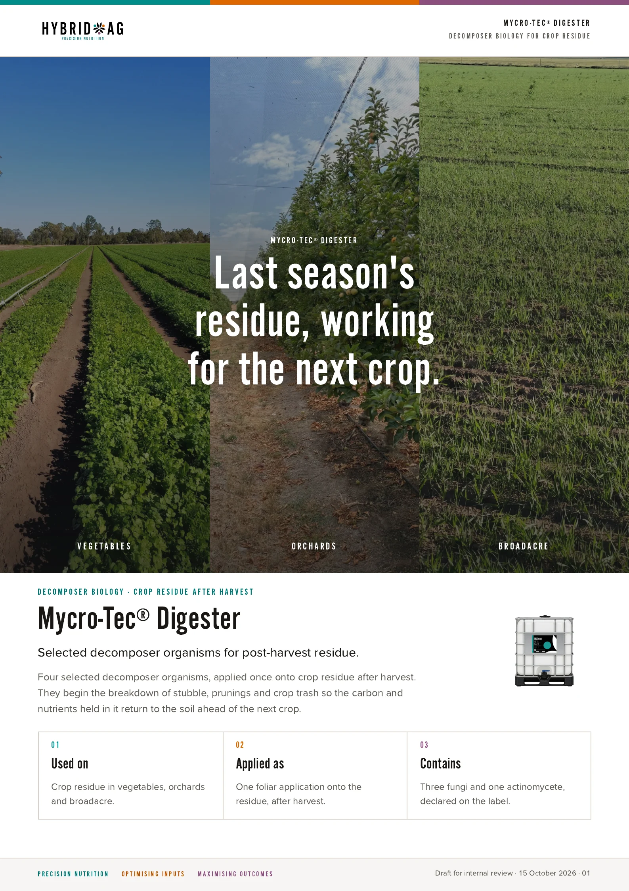
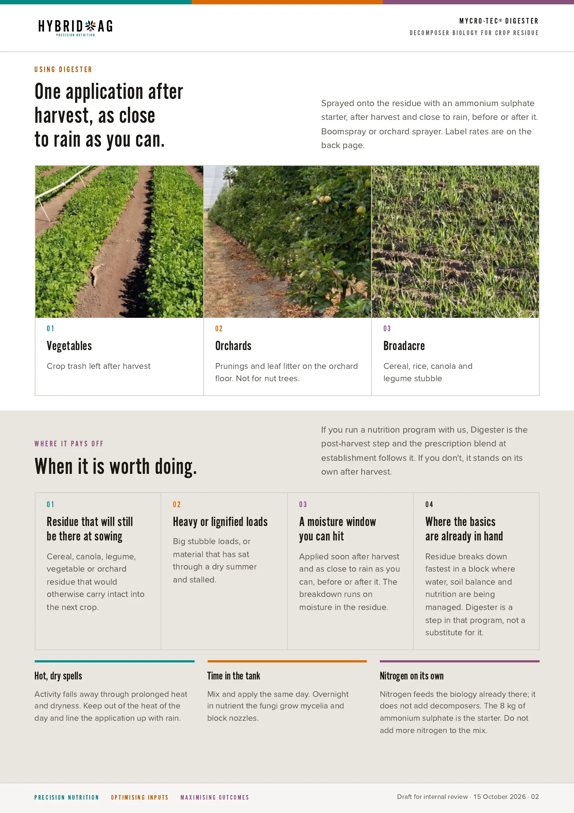
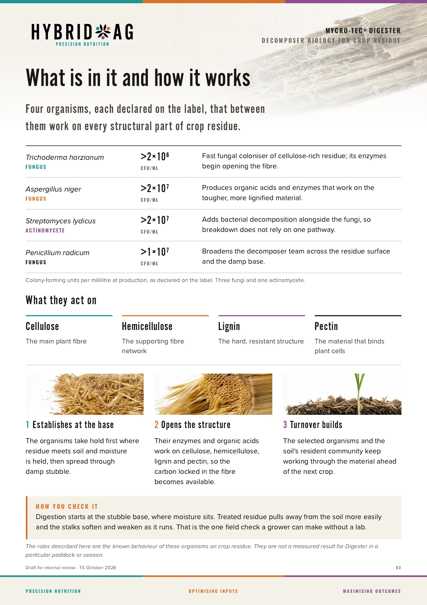
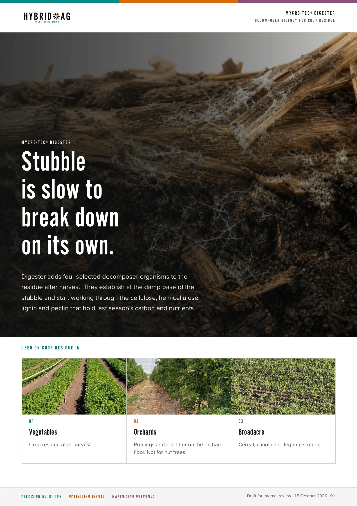
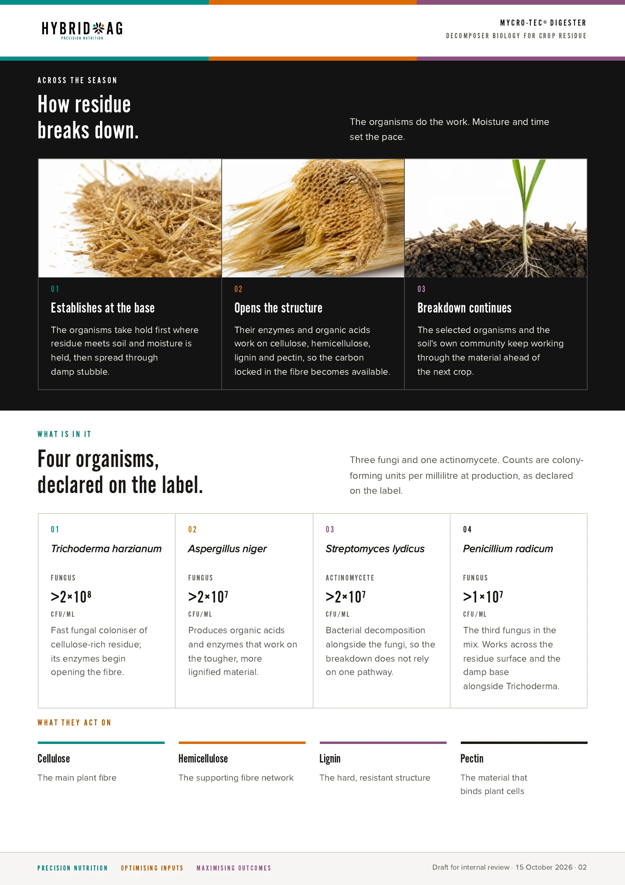
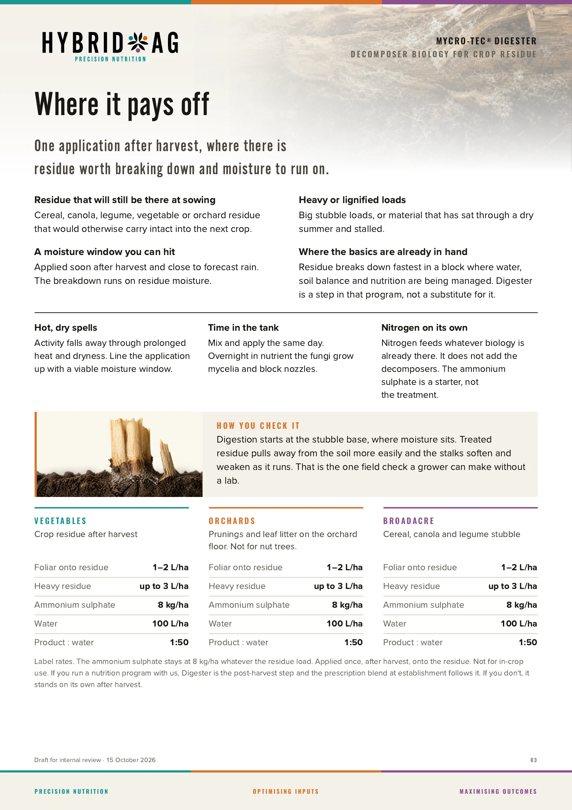
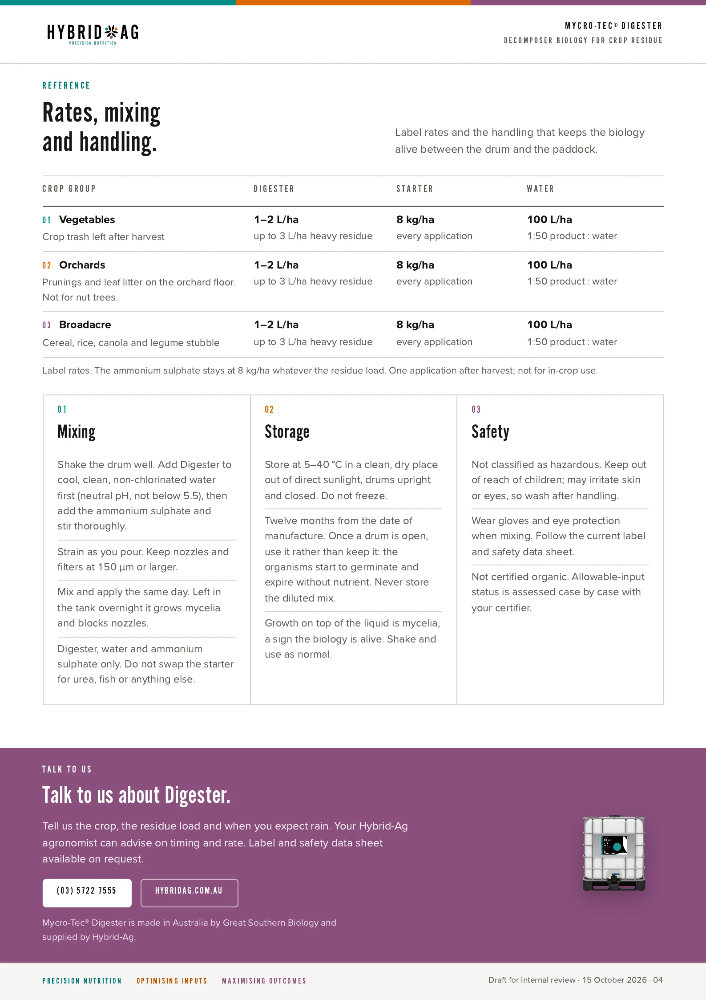
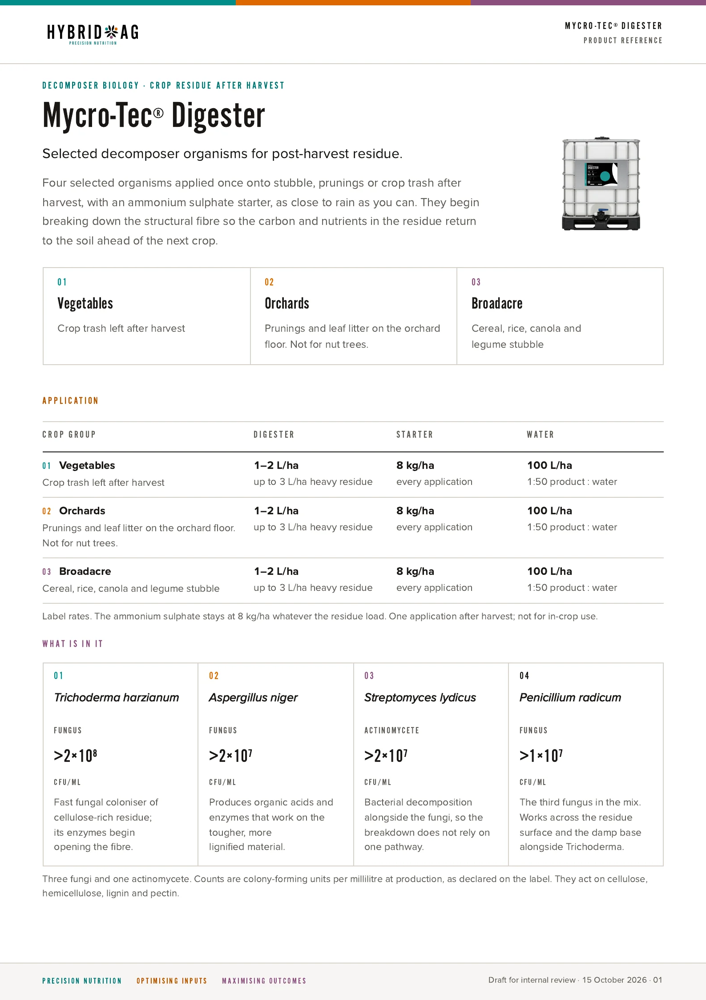
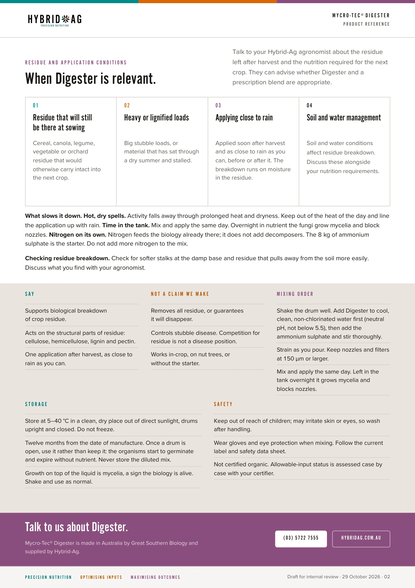

Founder's position · 14 October 2026 team call
Nutrition first. Biology is not the first card.
Tom Rowe set the order for the team: fix the environment, balance the soil, feed the plant, give biology somewhere to live — and only then reach for an inoculant, inside the guide rails of what we have actually seen work. This tab frames every product tab that follows.
Tom has been further into biology than most people selling it. Soil Food Web advisor certification, the Lismore compost-tea trials, fifteen years working alongside Sandy Montague, and an orchard bought specifically to run on nothing but biology for five or six years. His concern on the call was not that biology doesn't work. It was that the team has started reaching for it ahead of the basics, and that a partner who sells biology will naturally want it played first.
“Don't take any of the conversation on this as appearing like we think biology is a bad thing, because it is very, very clearly, very, very beneficial … But Sandy Montague would repeatedly say that you can't guarantee a result with biology.”Tom · 6:24 – 6:57
The Lismore trial is the reason. Ten compost-tea brews in a sterile lab, the same compost, the same buckets, two of them untouched controls — and one control came back with ten thousand times the biological activity of the other Tom · 3:13 – 3:29. Out in a paddock, with a bathtub and an air pump, that variability is the product. Biology cannot be guaranteed, so it cannot carry a program. Something that can be measured and corrected has to carry it, and biology rides on top.
Hierarchy of control — work it top down
Each level below changes the conditions the next one depends on. Skipping a level is how biology gets blamed for a water problem, or sold into a soil that will kill it on contact.
Environment — water, drainage, air
Every disease organism on a report is an organism of anaerobic conditions. Saturated soil collapses structure, kills the mesofauna and microfauna, and hands the ground to whatever survives underwater. None of that comes back by adding something to it.
“You need to fix the soil, because if you don't, it doesn't matter what you do.” Tom · 36:13
What we do here
Irrigation management before anything else: moisture probes, drip versus sprinkler, where the water is pooling. Drainage and soil structure. Highly oxygenated or nanobubble water as a trial option on a few trees where roots are sitting in low-oxygen conditions Tom · 14:51 – 16:19. A grower who moves off drip because it was concentrating water into one anaerobic point has already done more for the tree than any inoculant will.
Soil balance — the Soil Audit and the prescription blend
Ca:Mg ratio, Sodium, Magnesium, the traces. Lime and gypsum where they are needed, and the custom blend built off the audit rather than a bit of this and a bit of that. This is the core business, and it is the level that decides whether beneficial biology can win in that soil at all.
“If you have conditions which favour your beneficials, then guess what? Your beneficials grow, and your pathogenic ones don't.”Tom · 28:30
What we do here
Read the audit before the biology conversation starts. A block with Sodium at 5.3% and Potassium at 5% on the exchange is, in Tom's words, “very straightforward” to turn around with gypsum and the right blend Tom · 57:12. A block that is Calcium deficient “happens when you don't apply it” Tom · 46:42. Neither needs a microbe to explain it.
Plant nutrition — leaf test, then foliar
Sodium excess compromises Magnesium and Potassium uptake through the root. Foliar Magnesium, Potassium and traces alongside the blend lift the tree now, in this season, while the soil work takes its time. Two levers, pulled together.
“Foliar applications of those along with a blend support is going to make a massive difference in the plant — overnight, almost. And you'll find out really quickly how much of it is based in that side of things and how much of it is biology.”Tom · 35:39 – 35:59
What we do here
Get a leaf test as soon as there is flush to sample. Where a grower has no leaf history, or a consultant's occasional test taken at the wrong time, assume nothing. Correct what the leaf shows, support with foliar, and watch tip dieback and tree colour before anyone decides it was vascular.
Carrier and carbon — somewhere for biology to live
Biology dropped into a hostile soil dies on landing. Lockout works as well as it does because a large part of it is carrier — the backup team, not just the soldiers. Humax carries native Trichoderma from the Bacchus Marsh coal and will hold bacteria and fungi. Chelsea's reading says a carbon carrier lifts inoculant efficacy by 30–70% over biology alone, mostly in single-season trials.
“Bombarding an area with not only the soldiers that are going to do the work, but the entire backup team — which is the carrier — means they don't all die the second they drop on the ground.” Tom · 20:04 – 20:38
What we do here — and what we have not
Humax-based blends as the carrier for anything biological. Be honest about carbon: it takes about 30 t/ha of Humax to lift soil carbon one percent, and the cheaper route is to grow the biology and let it build the carbon — provided the grower stops killing it Tom · 52:52 – 53:34. Humax carrying a GSB inoculant is theory we believe in and have not run. Say so. Tom · 20:48 – 20:58
Biology — targeted, last, inside the guide rails
Once the levels above are moving, biology has a job and a fair chance. It still does not get a promise attached to it. Tom's objection is to anyone, including us, saying “we can do this” without runs on the board in that situation Tom · 9:51 – 10:03.
“We've seen a lot of really good things with biology. We haven't seen an application of biology magically fix a bunch of dead trees.”Tom · 12:19 – 12:31
Where it earns its place
Replants: dead trees come out regardless, so dip them, dose the hole, “chuck the entire kitchen sink and most of the bench top at it” — about $5 a tree, ten times a normal biology budget, and you get that chance once Tom · 39:32 – 44:16. Individual sick trees hit hard, the way Smithy did Tom · 12:35. Lockout as a foliar inside a nutrition program, where Chelsea has seen results Chelsea · 7:49. A Lockout fertigation timed to the summer flush. And in a soil where fumigation has been the band-aid — it kills the beneficials best and leaves the survivors with no competition Tom · 37:30 – 37:52.
Guide rails — what we have seen
Tom's safe version of the biology conversation has three boxes, and every claim we make to a grower should sit in one of them Tom · 11:22 – 11:48.
Seen work
- Lockout as a foliar within a full nutrition program, over several seasons.
- An orchard run for five or six years on biology as the trial, with a good result.
- Going hard on a handful of visibly sick trees — cheap, and it has turned them.
- Carrier-based biology, which is why Lockout is built the way it is.
Seen not work
- Biology bringing dead trees back. Dead is dead; replant and treat the replant.
- Open-air compost tea. Ten-thousand-fold variation between two sterile controls, and worse in a paddock.
- Fumigation as a fix. It stops the symptom, kills the beneficials, and the problem comes back without competition.
- Biology on its own in a block that is still waterlogged or out of balance.
Fifty-fifty
- “Exactly the same thing in what looked like the same example, and a completely different result.”
- SP as a prime. The solubilisation story holds in theory; it has been hard to see in the field.
- Humax as the carrier for an inoculant — strong theory, no run yet. It is a trial until it isn't.
- Any inoculant into a soil that already carries a dominant pathogen population.
The grower conversation
You will not pull a soil test out of a commercial orchard that does not show Fusarium and the rest of the pathogen list. They are always there. A DNA report says what is present, not what is active, and it never says why the pathogens are winning in that block.
“It's just like I get the flu and the guy next to me doesn't. The flu's everywhere. How come I got it and he didn't?”Tom · 28:18 – 28:28
So the report is where the diagnosis starts, not where the sale closes. Growers are coming to us on biology precisely because the conventional agronomists don't understand it. That is an advantage only if we stay the advisor who says what is known and what isn't, not the one with the silver bullet Chelsea · 10:06 – 11:20.
Tom's framing for a grower who asks what GSB's product will do: we know about it, we have not seen it work in this situation yet, we are not going to paint on it, and here is a good opportunity to find out together Tom · 13:19 – 13:44.
Say
- “Here's what we've seen work, what we've seen not work, and where it's been fifty-fifty.”
- “Every orchard test shows these. What matters is why they are winning here.”
- “Water, soil and nutrition move the tree this season. Biology goes in once they're moving.”
- “We haven't seen this product do this yet. Let's set it up so we both find out.”
Don't say
- “The biology will fix this.” No disease-control promise, for any product on this card.
- An inoculant recommendation before the Soil Audit and a leaf test have been read.
- A biological sold off a DNA report alone.
- “The carrier blend carries the inoculant” as fact. It is a trial we believe in.
Working with GSB · running a trial that teaches us something
GSB sells biology. We sell the program.
Expect Grant to lead with the inoculant whenever he is in a grower conversation — that is his business and it is a fair position for him to hold. Ours is that the audit, the blend and the nutrition program go first, and the biology on this card comes in where the diagnosis supports it. Where a grower is better served by something that isn't ours at all — an oxygenation unit that saves a block from replanting, for instance — that recommendation is what keeps us the trusted advisor Tom · 17:01 – 17:24.
Stay firm on what we know and what gets results. The partnership is stronger for it, and so is the evidence GSB ends up with.
Isolate the biology, or we learn nothing.
Where a GSB product goes into a block, set aside an area where it is the only treatment. A Humax blend already carries biology of its own, and a corrected nutrition program will move the trees by itself — put everything in together and nobody can say what the inoculant did Tom · 49:33 – 50:12.
“If it works amazingly on its own, then it changes the dialogue about what we do with it. Completely. It's not just about disproving it.”Tom · 50:33 – 50:49
Two budget conversations, not one: dead trees are replaced regardless and get the full treatment once; living trees get remediation inside whatever the grower can fund this year Tom · 45:34 – 46:00.
Where this is being tested now
Two orchard cases are running the hierarchy as written. A lemon block whose yield has fallen from 1,600 bins to 400 over four years gets water management, a gypsum and Magnesium blend on a Humax carrier, foliar support and a leaf test first; Tom is deciding the biological component with Chandra before the blend is made, and a Lockout fertigation at 5 L/ha is pencilled for the summer flush. A young apple block with sporadic tree death, worst in the unfumigated rows, gets its dead trees replanted with the full biological treatment, soil remediation on the living trees, and an isolated GSB-only strip so the inoculant is measured on its own. Josh project-manages the apple trial; Chelsea runs the lemons. Grower details are in the trial documents, not here.
Then go to the product tabs —
Timestamps on this tab refer to the 14 October 2026 team call on where biology fits — Tom Rowe, Jamie Granger, Chelsea Hall, Josh and Hamilton. No video exists; the summary, actions and full transcript are under on the Overview tab. Quotes are lightly tidied for reading and otherwise verbatim.
Range · Overview & meetings
One range. Three distinct jobs.
Three targeted tools. One diagnosed sequence.
Selected biological products for Australian cropping systems. Three distinct jobs, timed around the crop cycle — each with its own evidence standard and claim boundary. Recommend only what the diagnosis supports; this is not a compulsory bundle or a proven synergy claim. None of it goes in ahead of the hierarchy on

DIGESTER
After harvest
Role
Introduce selected decomposers and begin working through structural residue.
Payoff
Advance residue turnover ahead of the next crop.

SP
At establishment
Role
Place nutrient-solubilising biology where roots meet fixed phosphorus.
Payoff
Support access to fixed phosphorus already present.

LOCKOUT
Ahead of risk
Role
Establish beneficial biology before an adverse population dominates.
Payoff
Support occupation, competition and microbiome balance.
Three meetings behind this
We sat down with GSB twice before this pack was built, and the team met on its own on 14 October to settle where biology sits in our programs. The two GSB recordings are here so nothing has to be taken on trust — where a question in GSB answers traces back to a call it carries a timestamp to that moment. The team call has no video; its notes and full transcript sit under Meeting 3.
Meeting 1 · 6 July 2026 · 66 min
Intro & planning
Grant Kelson with Nathan Katseli and Jamie Granger. Microbiome testing, the Gerogery canola case, shelf life and formulation.
Meeting 2 · 31 July 2026 · 85 min
Technical session
Grant Kelson and Mostofa Kamal with the Hybrid Ag team, chaired by Jamie. Product roles, residue breakdown, placement and the evidence behind each.
Meeting 3 · 14 October 2026 · 68 min
Team call — where biology fits
Tom Rowe, Jamie Granger, Chelsea Hall, Josh and Hamilton. Internal, no GSB. Not recorded on video — the AI meeting notes and transcript are below, and tab 01 is built from them.
SummaryWhat was covered
Tom opened with his own history in biology: Soil Food Web advisor training, the Lismore compost-tea trials, fifteen years working alongside Sandy Montague, and an orchard bought specifically to run on biology for five or six years. At Lismore, ten brews in a sterile lab from the same compost produced two untouched controls ten thousand times apart in biological activity. His point to the team was not that biology is bad — it has been used to great effect — but that it cannot be guaranteed, and that he has a problem with anyone claiming a result without runs on the board. The team has to stay inside the guide rails of what it has actually seen work.
Chelsea raised that growers are increasingly coming to Hybrid-Ag on biology because conventional agronomists don't understand it, and that the honest position is “this could work, this may not”. Tom's safe conversation has three boxes: what we have seen work, what we have seen not work, and where it has been fifty-fifty. Every commercial orchard soil test shows Fusarium and the rest of the pathogen list; a DNA report says what is present, not whether it is active or why it is winning. Change the conditions and the beneficials win. Leave the soil underwater and the pathogens do.
Two live cases carried the discussion. John Ventry's lemons: a twelve-year-old block down from 1,600 to 400 bins over four years despite years of the same treatment, light soil with a total exchange capacity around six, Sodium at 5.3%, Potassium at 5%, low Magnesium and traces, no useful leaf history, and the grower moving from drip to sprinklers because the drip was concentrating water into one anaerobic point. The plan is a Humax carrier blend with gypsum and Magnesium, foliar Magnesium, Potassium and traces, a leaf test as soon as there is flush to sample, $2,500 of biology already charged on the 18-tonne blend order, and a Lockout fertigation at 5 L/ha around the summer flush. Tom's read: Sodium at that level compromises Magnesium and Potassium uptake, foliar support will move the tree almost overnight, and the nutrition response will show quickly how much of the problem was ever biological.
Montague's KVO9 block of Granny Smith Challenger, three to four years old: sporadic tree death of at least ten percent, worst in the unfumigated pole rows and the low ground near the channel; Calcium deficient with a poor Ca:Mg ratio; heavy wet soil; planted in a rush with no pre-plant program into ground with a pathogen history. Tom's position is that the soil has to be fixed or nothing else matters, and that fumigation was a band-aid that kills the beneficials best and leaves the survivors with no competition. Dead trees come out regardless, so replants get the full treatment, about $5 a tree, and you get that chance once. Living trees are a separate budget conversation. Montague has $1,000 budgeted for biology this year and a soil-remediation budget next year; Jamie's framing is to set that against the cost of pulling the block out and replanting it.
On trial discipline, Tom wants an area where the GSB product is the only treatment, so Humax's own biology and the nutrition program don't muddy what the inoculant did. If it works on its own, it changes the dialogue completely. Humax as a carrier for an inoculant is theory the team believes in and has not run. Tom also wants to brew up individual strains at a hundred times the concentration and hand-spread a small test on ten or twenty trees, with Taneo biology and highly oxygenated water as further options. On carbon: it takes about 30 t/ha of Humax to lift soil carbon one percent, and the cheaper route is to grow the biology and let it build the carbon — provided the grower stops killing it.
ActionsAI to-dos checked against the transcript
- Tom — talk to Chandra about the biology for the JV blend: brewed single strains at high concentration, Lockout, or Taneo. Josh has put a note on the Odoo delivery so Amos and Ops neither make nor deliver the blend until Tom has had that conversation.
- Josh — project-manage the Montague KVO9 trial: draft the trial and experiment documents, then work with Jamie and Chelsea on who at Montague approves it.
- Josh — visit JV, look at the trees, pick individual trees for a high-rate hand application beside untreated neighbours, and get a DSA leaf test once there is flush.
- Chelsea — send Josh what she has drafted so far; walk KVO9 and count dead versus living trees now they are in leaf; catch up with Ian next week for background on John's stone fruit.
- Chelsea — organise the Montague visit to Hybrid-Ag and Smithy's cherries, within about a fortnight and before November, with the people who can approve the spend.
- Standing — Lockout fertigation at 5 L/ha on the JV block around the summer flush, end of December.
The AI notes and to-do list were generated from the call and read with a grain of salt; the actions above are the ones the transcript supports.
TranscriptAI-generated · speaker labels unreliable in places
Machine transcript from the call recorder. Names, products and places are transcribed phonetically in places (Fusarium, Phytophthora, Humax, Taneo, Montague, Lismore) and some turns are attributed to the wrong speaker — several lines labelled Chelsea around 19:20, 32:53 and 33:01 are Tom or Josh. Timestamps on tab 01 point into this text.
Tom0:00Do have a fair bit of experience in the biological space to have the ability to make some fairly direct comments on it. Um, probably not everybody's aware that I went down this rabbit hole myself very, very deep. Um, it's probably coming up to. It's certainly gonna be 15 years ago. It may be a bit longer. I'm not sure exactly how long. I went down the soil food web advisor route, became a certified food web advisor, and that was the beginning of my aha moments actually, because we did our first really major trial for compost tea brewing. At Lismore under the guidance of Elaine and her off her sidekick at the Lismore lab. Pull me up if you've heard this story, Chelsea, already. Have you or
Chelsea1:09not? have known the Green State side. I don't necessarily record Yeah, separate site was something completely different, obviously. Um, that was, he was pushing biology that when we actually analyzed there wasn't any in there, which that's probably not the story,
Tom1:30but that's potentially why it wasn't working that well. Um, but No, the loss more thing, so the loss more soil food, and obviously we spent a whole week up there doing microscope courses, um, to do the advisor course with the follow-ups and training and all the rest of it. But off the back of that, we've got them to do try because we said right, oh, what we're doing, what, what hybrid aggregate doing is
Chelsea2:00we've got all of these things that we're using as resources. Let's play around and see what works. So
Tom2:09we send up samples of humic acid and fulbic acid and FKF and straight fish and two different types of seaweed to see what actually does, what does it do for the biology and how much does it grow? And let's see what the outcome is under a lab and under a microscope and what are we looking at. So this was all done in the laboratory environment. Extreme levels of sanitization, making sure everything was squeaky clean, done in limited control, so 20 litre buckets that were especially designed for full error. Used the best compost that ever identified as the source, which was just like a box. Of this super duper magnificent compost,
Chelsea2:59and that was all
Tom3:00obviously well mixed up, and it was divided out into our ten different sample trials, and we had two controls that had nothing added to them at all, and then other food sources. And the result we came back from that was that one of the controls had. Ten thousand times as much biological activity as the other control in a sterilized laboratory environment using the same compost sources under extreme regulation, and this was a company that was telling people to chuck a box of compost into a bathtub and out in the paddock in a Open environment and blow a bit of air into it, and they were gonna get something that would revolutionize their entire world growing. Completely non-sterile, you know, a million variabilities, and when we were having those discussions later. His head is about turned white on the spot. From a guy like Sandy who was doing obviously properly laboratory and tough controlled brewing of a specific microorganism. And if it wasn't properly sterile, you started up with contaminant in that brew, you would potentially end up with. Have grown 100% contaminant and none of what your target biology that you were trying to grow was. So he was his point of view on compost tea was if you want to gamble with putting on potentially some of the most toxic bacteria, dangerous stuff that you could ever grow, go for your life and do a compost tea brew because it might work out really well. Or it might be full of the most nasty stuff that you've ever actually experienced. Because very, very quickly, with average, um, aeration in a compost tea brew will go deeply anaerobic in pockets, so not through the whole thing because you've got a bubbles or looking like You're doing an amazing job in your bathtub. But yeah, the potential for anaerobic spots in that. So that was, sort of my, oh crap, this whole biological thing is there's more to it than the happy stories. And then that was, you know, that's the beginning of very long time ago. And then you, you know, I obviously learned a lot with Santi over the 15 years that I worked with him. Before NEM sort of got taken over and moved sideways, and obviously things have changed dramatically there. And then Rance taken the effectively what Sandy and I worked out together and turned into great southern biology and are doing the thing there. But the fact remains, and the thing that I would like to Probably make the most strong point about which I said to you earlier anyway, is that, you know, don't take any of the conversation on this as appearing like we think biology is a bad thing because it is very, very clearly, very, very beneficial, and we've utilized it and leveraged it with the tools that we've had. To great effect. So this is not saying biology is bad under any guide whatsoever, but just to reinforce that Sandy Montague would repeatedly say that you can't guarantee a result with biology.
Chelsea7:06Yeah.
Tom7:06You know, I'd, I'd go back to him and say, hey, we tried this and we did that, and it didn't work. And he goes, Yeah, well, biology, what do you expect? And there's nobody that I've come across since who had anything remotely like the experience in the field that Sandy did. So The level of credibility that I give those statements that he made is higher than anybody else that I've ever come across in this field, including the Tanio guys, and they're probably right up there, but they say very, very similar things. Pretty good handle on what they can do, and they've got a very good handle on what it doesn't do.
Chelsea7:49Yeah, the do's and don't do's are still quite complicated. To me, because as exactly all the research done into this, nine times out of ten of the studies are in a controlled or in a singular year, not over a multiple period, not over a multiple region. Um, I mean, there's some really fascinating data from Trichoderma on this particular topic, and some data where they've combined it with an organic or compost liquid or just some kind of carbon base increases the efficacy by thirty to seventy percent as a wide variation but from the foundational principle that we don't know if this is going to work because we don't know biology well enough And, but like you said before, we've, we've worked with this biology with the tools that we have. We've done quite a bit with lockout as a folia, as part of our nutritional programs, and have seen some really good results. Seen to an extent SP. It's a bit hard for me personally to see it when we've done it as a prime rather than the theoretical concept that it will help support nutrient solubilization. But when we start coming to this area, it's still so unknown.
Tom9:10Yep. Yeah, and you know, disease control. I mean, we did buy an orchard specifically to try it. Um, we did run that orchard for five or six years, running nothing but the biology as trial, um, and proved a really good result. So that's what I'm saying. Um, I've got a fair, bit of credibility to. Not be told that I don't believe in biology because we've done a fair bit more with biology than a lot of other people in reality and proven. But we've stuck within the guide rails that said we know what we can achieve with this and we know what we can't achieve with it. And I have a difficulty with people coming in and saying we can do this when they don't actually have runs on the board. That said they've been doing this for five years, and here's the track record compared to this and this.
Chelsea10:06Yeah, I agree. And I think before this is high at the forefront of this particular suggestion and recommendation, that's my portion does me come into play. I think just being out in the field these conversations on microbial testing and biology are Becoming a lot more prevalent now that there's increased exposure to it. So part of that, as I mentioned to you, is becoming, uh, the reality is people that we deal with go to our house on the biology nor the chemical agronomists, because the chemical agronomists don't necessarily understand this to the same extent we do, and even if we know a small part of the puzzle, um. But there are a lot of others that are probably in this space that do go with this is a silver bullet product. I don't necessarily want to come in as a biological advisor, but I do want to come in understanding as we discussed. Yes, this could work. Yes, this may not work. We don't know the answer, but we know what might all. We don't know, but we may know if we go through this what could be a possible solution.
Tom11:22Yeah, and I think that for me, the safe discussion on that is here's what we've seen work, here's what we've seen not work. And here's where we've had a 50 50. Because there's plenty of examples where, you know, we've replicated exactly the same thing in what looked like it was the same example, and ended up with a completely different result.
Chelsea11:53And I, I love either the JV or the Montague having this capacity to probably explore that in a very open way with the growers.
Tom12:06I think that's where it's really important because that's what gives you the credibility as a, yep, this is what GSP is saying is gonna work. We haven't seen it directly. We've seen a lot of really good things with biology. We haven't seen an application of biology magically fix a bunch of dead trees. That was meant to be sick trees. But you know, we've seen individual situations like Smithy experienced where he had some trees that were looking really sick and he went nuts on them. And that's, you know, that's our earlier ten thousand dollar per hectare discussion where you can afford to go ten thousand dollars a hectare on five trees. It's only costing you a couple hundred bucks or whatever it is. No one cares. That's where I see this as a golden opportunity, and the others can comment. I've already said way too much, but it's just from my point of view, you've got a customer that is so unbelievably critically important for hybrid ad like Montague. To make sure we're doing the right thing by them, they're sort of saying to us, Well, you know about this. The really important thing is to say hundred percent we know about this, but we haven't seen this happen in real life yet. We're not gonna paint on it, but here is a really good opportunity to prove what works and what doesn't, and try a few different things. Reference that isn't going to concern them in the slightest.
Chelsea13:52Yeah, and like to be clear, all these conversations been from the get go, none of this has been proven in the field or all of this. There's some strong science, like theoretical and some strong papers out there on these particular aspects, but. So there we're particularly the JV, even he said, look, if it's phasearium that's causing tissue, what's my alternative? Because there's no current conventional chemical method to treat physarium other than the utilizing the phosphonic acid for phytophora, which isn't targeted for physarium necessary, necessity.
Tom14:35And there is another, and this is something that I was saying probably to Josh and Hamilton earlier on. There is a couple of other things. One in particular that I'm I'm thinking of that it would be worth, which has got nothing to do with hybrid agriculbiology or anything, and that is that nanobubbleslash highly oxygenated water. All of these disease organisms are organisms of anaerobic conditions.
Chelsea15:03Yeah, I did
Tom15:04look, I did look
Chelsea15:05into that.
Tom15:05Which is why you're seeing an issue, you know, two years or three years after they've been underwater, it's collapsed the soil structure because it's been saturated for a period of time. A lot of your mesofauna and microfauna have died. You lose that entire soil structure aeration. Capacity of that biology, which just doesn't come back yesterday, it takes time and takes food sources, and typically they don't get any of that. They'll get another fungicide or two to make sure it doesn't happen. So it's something that I think would be well worth exploring as a Component of a trial, whether that's JB, whether it's module, whether it's at both, because you can, I'm assuming you still can, but they used to provide, they used to sell like a thousand litre shuttles of this, of that highly oxygenated nanobuble water. And I had a conversation with the guys from there. So, you know, you'd be able to do a control trial on probably a couple of trees. As an example.
Chelsea16:20That
Tom16:21would be
Chelsea16:21probably better suited for monocues.
Tom16:23One of the best exempt, one of the best examples I've seen of that was in a hydroponic water where they had really, really low oxygen water, and they were getting all sorts of root diseases because in in the water flow, it just had no oxygen in it. I think it was a bore water that they were using. And they installed one of the oxygenation machines on site. So they were continually oxygenating that water, and the difference within a couple of days was quite astonishing. So there's just, there's a couple of other components which, you know, it's, it's not about selling a hybrid ag products. It's about You've got into, a joint like Montague as a trusted advisor. If you recommend something like that and, you know, cost them ten grand to buy the machine to do a, block of four hectares or something, and it saves them replanting it, pretty cool outcome.
Chelsea17:26Yeah, and that is a big problem that they've got is the water management. And I think primarily my I'm leaning to the phytophora being a bigger issue in that block, probably than the physio or then working in tandem. I guess to just to go back to the the base as to what my understanding as to what hybrid would like to do with the biological side is I know that there is. Caution, and this is probably a conversation maybe for the wider team. Um, but I guess the the approach that I was leaning into with the JV was that one that I understand Tom and Hamilton and Josh, you guys were discussing, utilizing that Humax blend as a carrier and increasing the biological inutilation in that kind of system and doing quite a bit of research. Into that, um, like I said before, I've come across a multitude of papers that just emphasizes the success in combining a carrier organic matter with biology compared to just the biology alone, which I think a GSP program you probably would see some results if you're applying biology to a system that's never had biology before you might see an initial response in the tree. Um, but from What my research has led to is that is a big approach because the biology struggle to depending on the variable, but they struggle to inoculate the current environment if it's not, uh, if there is a high level of pathogenic biology there, and they're already got there. That's their environment. They keep them out. So having that carrier system. From my research has proven pretty strong, but again, that's been in single year field trials or control settings. So it's yet to really kind of back that up. The non-based on that. Sorry, not talking way too much. Just to interrupt, just on that point, cuz it's quite relevant. Part of the reason lockout works so well. Was because we effectively used that as a very specific carrier. So a significant proportion of the lockout as a carrier, and you will find on our main file a video that Jeff Grace did back in the day demonstrating lockout as a Effectively an infiltration of a huge amount of soldiers into a battlefield. think I think Jeff might got it from World War II footage. But yeah, basically bombarding an area with not only the soldiers that are gonna do the work, but the entire backup team. Which is the carrier, that means that they don't all die the second they drop on the ground. Yeah, which is which is really basically the exit date, but it's the other things that
Tom20:33surrounded that biology that was getting sprayed on as the lockout, which was the key to its success.
Chelsea20:42Interesting. I'll try and find that would be pretty cool to have up the sleeve, something like that.
Tom20:48And I believe the Humax will work exactly the same way in theory, but the point that Hamilton made the other day was we haven't actually done it.
Chelsea20:57No.
Tom20:58So it's a trial. We know that the Humax brings a lot of beneficial biology. It's got a, lot of its own. Native trichoderma that is in the coal from Bacchus Marsh. And as soon as that, as soon as we do our sort of aeration of that material when we're making the Humax, that grows quite dramatically, which is why it's got such good levels of trichoderma in it when we measure it, even though we've never inoculated it with trichoderma directly. It's it's come out of the native trichoderma in the coal. So we know it can hold a lot of bacteria, and we know it can hold a lot of fungi.
Chelsea21:37One of the other, I think it will work really well in the JV system, particularly it is a lighter soil, about six or so from memory TEC. And part of increasing that organic matter in that system, other than the nutrient beneficial components of that, is that having a bit more carbon organic matter present for that biology. Rather than just putting it straight into a sandy system that he's actually in that particular block, um, is switching back over to a sprinkler system because finding it's not, it's so sandy, it's down, it's not spreading out. Um, to apply lockout as through the drip system vertication in that kind of system with a low TC. Also makes me quite concerned. When I had a, so I had a chat to originally when we presented, the PSP program, and off the back of the last sales meeting conversation we had and a bit more research, we managed, I managed to get a meeting with him last week. And had a chat to Josh prior to we put together this blend system because I think particularly with his lower TC, and for him, I do strongly believe that that carrier system is the best way to go. John. Like I said before, what his other option is to do nothing, but he's got about three to four years worth of data where he's seen the lemons in this block go from sixteen hundred to twelve hundred to eight hundred to now four hundred bins. He's been told phytophrine has been treating it with phosphonic acid for years, and it's not hasn't obviously made a difference. So the other option is to. Try this. He's fully aware it may not work. He's fully aware he may not see something for for a while. The beauty of it, it is lemons, and he can through the harvest and packing of the lemons be able to tell us if he is noticing any form of yield improvement, which I think is quite a handy. Trial platform rather than an annual crop like a like an apple where you get one harvest.
Tom24:03Once a year, yep, yep.
Chelsea24:05Yeah. Yeah, and he's got, like I said, he's got that data to say the yield deterioration. Um, Monague do not. They know that it's because they haven't even got to the point where they've necessarily harvested this apple, yep. They're still young trees.
Tom24:22What apple is it at Montague's just of interest?
Chelsea24:24Uh, Granny Smith Challenger.
Tom24:27Okay.
Chelsea24:28So they had the granny, I think him, it was Granny Smith's in that KVO nine block prior to that they suspected Botchosphere. They. Fumigated the rose, but they couldn't fumigate the polares. So when you actually go into the block, it's the polar with the net is actually the worst compared to everywhere else. You still are seeing the random death, but it is quite clear where they haven't fumigated prior to planting. Uh, that block in particular, the cow mag ratio, is not that great. It's near the channel and has probably been overwatered more than it should. It got planted as well during Landing New Years. Uh, didn't get the floods necessarily, but obviously quite wet roots in a heavy or clay, a more clay-like soil for a prolonged period of time with historical. Uh, either Botchosphyria, physaria, phytopha, whatever it was, uh, it's straight away these trees have started to to die. Um, to some, to the point where I know Grant said that they possibly could be brought back. I, I strongly don't think that, I think they're gone. I think you're better off replanting
Tom25:44around
Chelsea25:45biological dip or something like that, and then try and get them up and growing again. Part of the JV too, just a bit of backstory, is so these are 12 year old citrus. He's got six year old citrus that we also did a test on. They aren't showing the physical symptoms, but soil wise, and they've been sharing the same pruning equipment and everything. It has the phytophora, sorry, the physarium in those soils as well. He's also planted some very young lisp and as well without any treatments or pre-planting treatments as well. So the idea with this blend approach was to not just apply it to these trees showing the death, but also the six-year-olds with the potential and the young trees as well for this particular year.
Tom26:38How many soils that get tested don't have Fazerium in them?
Chelsea26:45Only one I've come across is cockatoo growth, but again, in the meeting, it was brought up. That was part of my comment earlier, as I didn't necessarily think based on the numbers, it was an issue. A lot of cesarium. That's, I mean, whether it is.
Tom27:11I, think that would be part of my historical experience that you would be very, very hard pressed to do a soil test anywhere in a commercial orchard that didn't have fusarium show up on a biological test. Which is, of course, a wonderful thing if you're trying to sell something that you're combating FaZerium with, and it's it's not just Faezarium, it's pretty much all of the pathogenic fungies will show up, or all the pathogenic microorganisms will show up on our test because they're always there. yeah, and and
Chelsea27:50And that's the thing, it's, it's the DNA as well. It doesn't even say whether or not these biology
Tom27:56strains are active. But they will be. I mean, it's, it's, that's what I'm saying. I, I, based on all of my learning and my experience, you won't find, you won't take a soil test out of an orchard, out of a commercial growing operation that does not have pathogenic biology in there. Because they all do, they're all sitting there. It's just like I get the flu and the guy next to me doesn't.
Chelsea28:23The
Tom28:24flu's everywhere. How come I got it and he didn't? And it's the same, exactly the same in the soil. If you have conditions which favor your beneficials, then guess what? Your beneficials grow, and you're Pathogenic ones don't, or they don't proliferate. Stick them underwater so they're all drowned, and the ones that survive in that environment really well do really nicely. So you have a proliferation of that pathogenic biology. Can you reverse that by adding? Some beneficial biology to that environment without changing the environment. In some cases, yes, obviously. Sorry, Garland off.
Chelsea29:20Yeah, with with the JV and the Montague thing is quite two quite different situations from that point of view because the John Ventry job. His soil isn't bad. It does need some magnesium, and it's got quite a bit of sodium from water. And so the carrier blend that we've come up with has got some magnesium and gypsum. Gypsum and stuff like that to try and help with that a bit. But overall, his soils are trillion times better than the Montague soil. And if
Tom29:55it's a, if it's an open draining soil, a more sandy profile, you've got water.
Chelsea30:01He's got sodium away. I don't think the sodium is going to be an issue at all. Then he's changing some of his practices in terms of he doesn't, he thinks his drips are, uh, concentrating the water too much in one point, which could be causing a localized, um. Anaerobic environment, so he's gonna change that to. I think he's he's doing micro sprays or something, isn't he? Like a sprinkler system, which a lot of people are switching back to nowadays, interestingly enough. Um, and so he'll, I think he'll still keep his drip lines in there, but yeah, essentially he's gonna go over to to that. So he's he's going forward and changing his. What he's doing to try and combat whatever might be going on, whether it's Fazerium or Philtophera or Flippin, I don't know, influenza A, I wouldn't have a clue. And I, so I think from his point of view, it'll probably be quite an easy one to actually turn that block around as far as yields go. Again, he's Had call rells in there saying, oh, yeah, just put a bit of this on. Yeah, put a bit of that on. So he hasn't had a nutrient management system. He doesn't know what he's doing with with levels. So I think turning nutrient wise alone. We've got, yeah, nutrient wise, we've got, he's given us the program as well for the whole nutrient system. So I think we can make a massive change in. The tree, along with his management practices in watering, um, and will just set the tree out to sort itself out. Um, yeah, he doesn't, I think, potentially. So as I say, he on on to that point, he doesn't necessarily keep a bear orchard too. I mean, there's a bit of weed pressure, but other than that, it's pretty, um, it's not like a bear almond. Based orchard, he does try and keep a bit of vegetation. Again, some of them might be weeds, but they probably still do the same thing with photosynthesise. So I think, yeah, look, it's an interesting, interesting system, and I think he probably, it's, it's interesting because as well, Monague have the financial ability to do something, but this guy's probably actually going to spend the money to do something. You know, monocues, everything's budget wise. We don't have the budget for soil remediation this year. We'll do it next year. This guy's got semi switched on. He goes, Well, if I don't do something, like I'm doing false acid at the moment, if I keep doing false acid and it keeps not working, well, then I am stuffed. So if this year, if I do something that may work or may not work, well, it's better than it. Surely not working. And he's of, the understanding, Shells, that it is not a guarantee at all as to fixing anything. I made it very clear.
Tom33:03So just on that.
Chelsea33:04What I thought was the case. He he understands that this is a completely unknown trial, and the idea of putting, um, one of the applications into the blend is. Is to give it an extra food source and carrier, and he sort of says, Oh my, that sounds like a good idea. Makes sense to me.
Tom33:24Just just on that, sorry, and this is now changing the conversation temporarily to a nutrient conversation. What sort of level of information has he got from leaf analysis?
Chelsea33:34Jack Diddley, I think. I don't think they've done leaf tests. Maybe the occasional dry ash. The thing is, he's been talking with Cameron from IK. Their primary focus is going to be the stone fruit and pears, stone fruit and apples that he runs. That's the crop that they know. So it might have just been if they took a test there, they would take one of the lemons. But as he said, they don't know anything about lemons. There's not an aggress up there who. Who does? So even if he has got results, which I can follow up to see if he does in the past, I would imagine that they're probably not worth
Tom34:10much.
Chelsea34:12I'm not, I wouldn't be confident the timing would be correct, let alone the I think we just need to get a DSA as soon as this, soon as they get a bit more flush on them, which that It's probably getting close to now.
Tom34:24Yeah, cuz I, I guess where my headspace goes with if it's a sandy soil, are we seeing, these trees dying? Or is it just a danger? Looking sicker overall, which could well just be a nutritional thing rather than a
Chelsea34:44They're not, dying like the in as to the extent as which Montague is like that's a dead tree. There's a heaps of dead
Tom34:53trees. But
Chelsea34:54they are experiencing that tip die back.
Tom34:58Which is
Chelsea34:58like that, what made me think it was a vascular-based issue. But oh, a hundred percent. There's probably nutrition
Tom35:08alone to run a program on this that's had a bit of this and bit of that. You're going to notice that quite quickly. And that point, I'm just thinking from a turnaround point of view for him and yield and tree health. If he doesn't have, if we don't have good leaf samples. In a system where, from what you've just told me, there's a magnesium deficiency number one and a sodium excess number two, which means that your magnesium uptake is gonna be compromised and your potassium uptake is gonna be compromised. Foliar applications of those along with a blend support is gonna make a massive difference in the plant. Overnight almost, you know, it's something that you can triggers you can pull and make a pretty dramatic difference straight away, and you'll find out really quickly how much of it is is based in that side of things and how much of it is biology. And that's not discounting the fact that you can do stuff with biology at all, but you've got two different levers that you can pull both at the same time on that. Montagues is clearly, a, well, guess what? You need to fix the soil because it's screwed. And if you don't, doesn't matter what you do. And you've clearly got a biological proliferation of detrimental bacteria because where you haven't fumigated, it's worse. That's a pretty good guide to say. Yeah. You've got an underlying, but what that doesn't tell you is it doesn't tell you why. All it tells you is you have. the fact that you fumigated and you've semi-fixed the problem for the moment doesn't say anything about the fact you've got a major soil issue that's creating this issue. You've just stuck a huge band-aid over the top of a soil issue instead of fixing the soil by fumigating. As
Chelsea37:09soon as you pull that band-aid off, E. G.
Tom37:11Fumigation doesn't last for very long. Fumigation off,
Josh37:14well, it's pulled the scab off and it's bleeding again because I guarantee you, whatever is in the pole rows that Is still alive, is now back over into the fumigator.
Tom37:25Hundred percent it will be, and it would have always been there because the fumigation doesn't kill everything by any stretch of the imagination. And you know what's worse, guess what it kills best? The biology, this is not disease, yeah. So it kills all of your beneficials a hundred percent really, really well, and the majority of your disease ones. But the ones that are left are the ones that grow back because they don't have any beneficial ones there as competition. It just takes a while, so you get a start.
Chelsea37:59Oh, um, just so you can see, Tom, I'll just send you some photos of. The Montague one, it's, it's, it is very sporadic. I probably could share them on here, but um, look at Josh, you, you've seen them. You've got, there's quite a bit of area that there isn't tree death, but it's the same thing we're seeing at Rosebank. It's their stone fruit. You have three tree dead in a row. Then it looks fine, and then you've got another sporadic. It's just more constant. The percentage is increased in the non fumigated.
Tom38:36Right.
Chelsea38:36As you can see, there's also like the right side, it's slightly lower, it's closer to the channel, back channel area, that and all. It's just, yeah, it's
Tom38:46worse.
Chelsea38:46Water issues. So they've got the phytophora, they're getting moisture probes in. They've actually taken the irrigation management. From the manager there and Typhoon, one of the technical managers, is now doing it just to see if that helps. They're a system where I think there's a lot of trees that they're probably better off pulling out and replanting and trying again. But for JV's side of the fence, he's got no dead trees, like. To anywhere near this extent.
Tom39:16and on
Chelsea39:16the Montague side, if you've
Tom39:18got dead trees, if you've actually got genuinely dead trees, they've got to come out anyway.
Chelsea39:24Yeah, there was. They're not
Tom39:25leaving dead trees in there. So the dead trees have to be replaced, don't they?
Chelsea39:30Yeah, they're, yeah. So that's
Tom39:32a really good opportunity to go absolutely bananas with biology at the That point because you get an opportunity there to
Josh39:42discuss with the other day with when Meg Andrew went there as well. That was the idea, was yeah, those replants, they get dipped and smashed and poked and stuff gets put in the hole and
Tom39:54chucked the entire kitchen sink and most of the bench top at it.
Chelsea39:59Uh, to be quite candid. I'm not confident what their involvement. They need to do something. They know they need to do something. I just know this system, the Montague system, and it's just, it's, they're gonna drag their heels just far as they can. At least with John, he's, yeah, whatever you guys.
Tom40:21He's gonna do it because he owns it, and the micro difference.
Josh40:24I think with the Montagues one, it's gonna be a matter of, okay, let's figure out what. They actually need to do as far as the soil remediation and et cetera, and then like triple it or quad triple it so that when they inevitably come back and go, No, we can't do Right, eh, we'll let's back it down to this and get something actually half reasonable. But that's probably sales conversation more than a technical
Chelsea40:50to do about the problem conversation. I think we've got a thousand dollars currently budgeted towards some biological program. Again, it can be increase. It just will have to be a conversation with Chris involved. That doesn't include the lime because they've already done that. Next year, when they're putting together, so historically it's chemical budget, fertilizer budget, miscellaneous budget. Next year they're going to have a soil remediation. Budget, and this will probably be a big proponent of it, and then the rest will be increasing the lime or gypsum across because there's quite a few blocks with that really poor cow mag is their biggest general constraint across the board. So I think next year is probably going to have more of an influence, but I still would like to see if we can put something together for them to do this year at least before these things go to bed. Which we've got plenty of time before the year flies by.
Tom41:47Yep, but it just even in a, even in an orchard where. Sorry, Jamie.
Jamie41:56Sorry, Tom. I was just gonna say, in regards to budget with Montague, I understand this is always a tricky thing in the corporate scenario. As to what budget they want to allocate towards something, particularly when it's an un, it's a, unknown as to whether or not we can do something that's gonna work. But the reality is, if they don't do something, they then have to allocate the budget to pulling it out, replanting it, and still potentially ending up in the exact same position in a at a certain period of time.
Chelsea42:27There's gotta be. I think that conversation's an easy conversation to have with them because it's literally that. How much to put in? How much six hundred grand a hectare? Yep, right. I guess it cost two grand.
Jamie42:39Because that's where my mind goes to immediately. It's like, right, let's establish what the cost of pulling everything out is, replanting, getting back to X amount of years into so how many years old are these trees currently?
Chelsea42:55Three, four. Sorry,
Jamie42:58chuck three years worth of additional time on that. The, the, absolutely.
Josh43:09Yeah, no, I think that from that point of view, that's, the easy part of the conversation, is saying. You know you have to do something. Stop whinging about a thousand dollars a hectare and let's take three grand a hectare rather than three hundred, um, in, you know, lost revenue and all the rest. Um, and but what we need to figure out is what we actually are going to do.
Tom43:35Yeah, correct. And I just just to reinforce that point, it's a corporate They will pull dead trees out at some point in time. It's, it may be a timing discussion, but they're not going to leave dead trees in that block.
Chelsea43:49They've got a bin of granny smiths that they've already got it. And that's the whole point is if you've got this just sitting in the cool room. Just plant them. Just pull the dead
Tom43:59trees out and plant them. And that's where you have the opportunity to spend, you know, potentially five dollars a tree. Which sounds expensive, except it's really cheap, and it's probably ten times as much as you would normally spend on a biological budget. But guess what? You get that opportunity once.
Chelsea44:20No, I don't. I, I think the problem with these, like the guys agree, they want to do it, but. The over the top, they've got their red line. They might be able to get away with a bit this year. I think next year is probably going to have a bit more of involvement. But again, I want now that these things have leaf on them, and we can really clearly see how many are actually dead. That's gonna be. There's not as many as I originally thought, but there is still quite enough when you haven't even got your first harvest off these trees to go well. Crap. Going to have to do. What are we
Tom44:57talking? Ten percent?
Chelsea45:00Kind of maybe At least ten percent. I'm going to be there tomorrow. I'll do a few laps and do a bit of a count because I'll have how many trees are in the, row, um, and do a bit of a quick count now that they're clearly visible. But the other concern is even if the trees that still have folia on them, uh, you know, technically aren't dead, if it is a vascular-based issue, once we start producing more fruit, how's that going to interfere on the fruit quality in those trees too?
Tom45:34Yeah, and that's that's where I think there's two very different discussions as well with within the fact that you're having sort of multiple discussions about approaches. You've got the trees that are clearly dead, you've got to do something about it. That goes in a very different discussion box to what are we gonna do about the trees that are still alive and what strategies can we use? But we've only got this budget. That sort of there's two separate budget discussions effectively, to me, anyway, how I approach it.
Chelsea46:03Yeah, the two budget, um, and for both Montague but also JV, the other big one is. As easy as possible as it integrated into their current system, and that's where I think the blend on top of being a good carrier also can carry the nutrient component too. So it's one pass, if you would add it into their current program.
Tom46:22And the Montague block's quite calcium deficient, isn't it?
Chelsea46:26Yeah, most of that, particularly. This is the Calvin area. So one of Alex Jamble's old ones. It is quite calcium deficient, which is across quite a few of their properties. It's pretty common in. Shep, I'm noticing. Very. So it's. Which
Tom46:42happens when you don't apply it. Yep.
Chelsea46:45There's probably a few pre-planting things. I think the for these guys just, I feel a bit sorry for they did inherit this problem. They weren't necessarily in charge or responsible, and now they've got this problem that they've got to quite figure out what to do. So this did happen. This plus the stone fruit, which coincidentally are also now being ripped bulldozed out because they were affected. They all trees came early. They didn't have the management system in place.
Tom47:25We're
Chelsea47:25in place. Did I drop out?
Tom47:30You were up to they inherited the problem.
Chelsea47:33Oh, yes, pretty much the main main story. They inherited the problem. Uh, coincidentally, they got all these trees early, and they didn't have enough time between me putting up the trellis and posts. So by the time they put the trees out, it was a big rush. And so there was no fumigation, there was no pre planting. Blends or programs or any kind of system in place. These trees all got pretty much put in straight into soil that mine have already or has already had some pathogenic history. And so now they've got this problem now that they're a bit more growing to go well. What, what can we, do?
Josh48:19That Multicue one again, it's there's a sales conversation and a how do we fix the problem conversation. If we can come up with how to fix the problem without any budget restrictions, there's pl plenty of ways we can attack the sales conversation with them. That's gonna be the easy thing, I think.
Tom48:43And the other thing that I think is important in this conversation, Josh, is we have an opportunity to use this as a trial.
Josh48:50Yep, and if that's the case, like let's get it together and figure out what exactly it is going to be, um, and what we're going to do, and then Jamie can come up with a sales strategy on who we need to talk to and where we can push that in, if, you know. Wherever money's got to exchange, but I think the sales side of it's actually probably going to be the easiest. I think we know roughly what we've got to do for the rest of the block. But if we want to set it up as a trial, we need to get in and actually do it.
Tom49:26So what on the endboard?
Chelsea49:27Can get some documentation and get some testing procedures or whatever it
Tom49:32might be. What I mean by that specifically is I think it's really important. We've got an opportunity where we've clearly got an issue that something's got to be done about it. We've had a lot of discussions with a company that has a solution with biology that we haven't seen in this particular scenario direct results with. That's an opportunity to make sure we isolate an area that says this the only treatment that we do here. So that we don't muddy the waters with, oh, yeah, we've done a whole hybrid blend and we've remediated the nutrition, and the Humex has got a crap load of biology in it, and we've added some extra stuff to it as well. So the GSB stuff, we don't have any visibility about what would it do if we'd only irrigated that on its own.
Josh50:20So again, let's come up with a plan of what that's gonna be and who's gonna do what. Um, and do it
Tom50:30because we need to know that for our own. Good, because if it works amazingly on its own, then it changes the dialogue about what we do with it, doesn't it? Completely. Yeah, particularly if we
Chelsea50:44are. It's not just about.
Tom50:47It's not just about disproving it at all. It's about if this is
Chelsea50:51actually
Tom50:51bulletproof. Biology that knocks out vascular disease in plants, we need to be able to know that that's exactly what it does and how well it works, so that we can take it to a whole bunch of other people who've got the problem.
Chelsea51:05Um, so part of this KVO9, this motif block, that is going to be the trial block. They're happy to do whatever we want to do trial-wise, again, cost to an extent. We'll have that conversation. They've got a Plenty of other blocks that are experiencing similar issues now. Again, there's a couple of blocks that I know were underwater during the floods. And like I said to you, Tom, it's been about two, I don't know, three, four years now, I think since the floods. And I'm curious whether or not we're now seeing quite a few physical symptoms come through from that and off the back of some La Nina years. But in terms of if this does prove to have some positive momentum, again, it can, I understand it can take quite a bit of time before we even see results. If we do, from a Montague alone side, there is going to be a quite a big area. They would probably like to push this forward, and plus quite a bit more ship where people are commenting on random tree death being quite significant. The other side of the fence, too, just to go back, I guess, from a sales component on the blend as a carrier system, but the organic carbon, their new head of orchards, is very big on trying to increase carbon in their current system. We yet to find out if that is a monetary gain. I don't think it is. I just think it's, um, he just notices there's quite a lot of low organic carbon across the board and wants to. Increases. So I think it can work. Yeah, I think, there's quite a lot of benefit in this current system, and it integrates really well with what they're currently doing as a program. And I think
Tom52:47part of that discussion we need to understand when we're having that discussion with growers that adding carbon to increase soil carbon is actually quite difficult.
Chelsea52:59So you
Tom52:59put on 30 tons to the hectare of Humax to raise the soil carbon by one percent. It's quite an expensive way of doing it.
Chelsea53:09Yeah, yeah. There's, I think we've got quite a few slides on that from the old Hawthe roadshow on that exact topic. But that is, it just, I, just wanted to mention it because it does feed into the Humax based. Blends as well from that point of view.
Tom53:26But part of that whole discussion is you increase the biology. The biology will grow your carbon level for you. Yeah.
Chelsea53:33As long as you don't
Tom53:34keep on killing it with more fungicides. That'll
Chelsea53:37be the next conversation on their particular programs on that fund.
Tom53:42All part of the fund, but anyway.
Chelsea53:45So on the, JV Orchard side, I suppose we've got a blend in the current operations system. The idea is to add the lockout into this blend. Or Tom, you mentioned earlier, perhaps. What was that? The microbes into a powder, the particular. Oh, we've got,
Tom54:09obviously got, Taneo. Toneobiologies, which is effectively what John Kemp uses, and you know, it's an opportunity to try that. And then probably probably in this conversation, one of the main things we have not tried at all that I think would be very, very interesting to try. Is to brought up a concentration of the biology that we've got, which means it needs individual strains ideally rather than blends, which allows you, to add to your QMAX a hundred times the volume of the biology within a hundred times the cost.
Josh55:01So we've got two and a half grand of lock. Is that two and a half grand lockout? That was substitute essentially. Was that the locat I put in that order? Josh, yep. So we've charged two and a half grand. As lockout going into the blend, we can pull that out and do whatever you so desire in that, and that's, I suppose, that's the budget we've charged for.
Chelsea55:39And the plan was to do another fertigation of lockout at five liters, um, probably a bit later on in the year, maybe around the summer. Uh, summer flush. Summer flush.
Josh55:52End of December somewhere.
Tom55:58And then I think, you know, coinciding with that obviously is the discussion we had earlier with the nutrient support, which you probably find there's a lot more capacity to make a difference in that situation.
Josh56:14Almost guarantee this guy's block will be very much on the way to being turned around and back to reducing higher numbers by the end of the season. Again, we get a pretty good apart from magnesium, which again it's not difficult, but we're applying most of the deficiency, soil deficiency in the blend. Um, he's got a pretty good soil to work with. From that point of view, it's not, it's got potassium, all the expensive things are there.
Tom56:44What's the, um, what's the sodium level per se?
Chelsea56:51Um, five point three percent on the twelve year olds, which are the most affected block.
Tom56:56V2 potassium.
Chelsea56:58Five percent potassium. Correct. So very easy to turn that around, I believe.
Tom57:12Not easy.
Chelsea57:15Well,
Tom57:16very straightforward.
Chelsea57:20Easy enough. Traces are low as well in the school. Fossil means be, yeah, their total is not too bad, but
Josh57:29But like we've done this multiple times by applying sort of gypsum and a few other bits and pieces and very successfully leaching that sodium out.
Tom57:43Even even just the following supporting season of correct the elements that you are going to be missing, and with that level of sodium, you're going to be missing magnesium and potassium And a few other traces, and you support that with folia, and those trees will become significantly more happy regardless of what the fuse bearing status is.
Chelsea58:05There's a really good sales opportunity, not just on the limit side, which is, I think, eighteen hectares currently, but they do have quite Quite substantial stone fruit and apples, which is currently managed by Coldwell. But he actually does the flat stone fruit for Ian and knows NA and Cathels group very well. He has a close relationship with Ponkett's and has obviously been in the area for a very long time. Knows Sunland, like Nick Damayos really well. Even
Tom58:39though Ian Is a typical grower and tends to forget. It's, nice to remind him every now and then how many millions of dollars we saved them by fixing their problem with the Kansy.
Chelsea58:53Yeah, yeah, but it would, um, I'll go to catch up with Ian next week. I wouldn't mind, yeah, if he has a bit of feedback on the on John, particularly if there's something worth knowing, even just the stone fruit side of the fence, how it all comes.
Tom59:07Yep, and I think that's, part of that, part of this same discussion. You know, you reference a sales opportunity, which is, is a hundred percent important, but how cool is it to turn a growth block around?
Chelsea59:21Getting
Tom59:21back, getting back up to sixteen hundred bins a hectare over a three year period.
Chelsea59:25I think it is we'll get up to that sixteen hundred bins a hectare and then we'll get onto all the rest of his property. I really think it'd be a very easy thing to turn around to do. But I think just having someone who's got quite a bit of because obviously they pack themselves, he's, and he's pretty, they're pretty on top of it, that whole family. can pull data out very easily and very well. Like they've got packouts and numbers and even though they slip the odd old Piece of fruit in the box and pretend they didn't notice.
Tom60:00Oh, it was only in the bottom of the box.
Chelsea60:06What you're gonna do, don't you? So with the, just to go back to the JV's apologies, but the lockout liquid, are we including that in the blend? Or Tom, did you want to have a bit of a think as to what? I'll just have
Tom60:19a conversation before we actually pull the trigger on that. I would love to have a conversation with Chandra. Because he was, talking about playing around with with something. And even if it's again Chelsea, even if we just go right out, we'll put the lockout into the Humax and put that across the block. But we're gonna, have a look at ten trees or twenty trees and just make up a little blend and hand spread it. And even if, you know, even if that is just a, this is what we would achieve if we did this by adding, for example, by adding a hundred times as much lockout to that trial area. And it just gives you some data that says if we brewed up ourselves and created a hundred times as as much active biology and put that into the UMAX. What does that look like? Because I don't know. I genuinely don't know. I've got a pretty good idea of what it should look like.
Josh61:24So can we leave you to have that conversation? I'll
Tom61:28have that conversation. Check with Amos and make sure he
Josh61:29hasn't actually made it already.
Tom61:31I think Amos has been told not to make it until
Josh61:34okay, good. I've just added on to Odo that on the delivery note for Amos and Ops to have a chat to you, Tom, before either creating or especially delivering it. Yeah, and then I'd like to go there and have a look. I want to see what the trees are like and see if we can get a leaf test while we're building this program and potentially identify some trees that could be individually treated. And the one right next to it not individually treated for fun. Once we've got, yeah, you got two and a half grand that we've charged the customer for biology,
Tom62:14yeah, it's a fair budget
Josh62:16over eighteen tonnes, so do what you want, um, and let's get that out then. I feel like we need to. I feel like we need to figure out exactly what the plan of attack on Montague is going to be and who's gonna spearhead or project manage that or whatever it might be.
Chelsea62:36I, on that, I would love to keep the momentum on the Montague, but I will probably be honest. October, November is not a great month for me to focus on this. Nothing
Tom62:47else going on.
Chelsea62:48Nothing else. I haven't had five or six phone calls as we've been talking. I obviously very much want to be involved, but I will ask for some support to keep this momentum on this going, um, because I, I, they are hungry to do something. The guys on the ground again, they're going to have that corporate, corporate limitation. Uh, but in terms of creating a trial proposal and diving deep into it, I'm, I'm not confident I can. Do so in a timely manner. It might take me too long before we, and we want to probably act on it quicker than what I will be able to do, unfortunately. Um, I would love, yeah, to for someone to, uh, hop on board. I'm more than happy to to organise a day out to come look at this block of if of interest. Um. Actually, what might be good, Tom and Hamilton, while you're on, is there's been a few conversations between myself and the Montague guys about coming up to see some of Smithy's cherries, and they're also pretty interested to maybe pop into hybrid to say good day and have a look around or, you know, come for a barbecue lunch if that's something you both would be happy for me to organise. It'd probably be in a fortnight. Obviously, as long as they bring the people that are the next level up that can approve the ten grand hectare.
Tom64:19No, I just, as far as actually helping out, I'll, do the conversations with Chandra and some discussions with Josh, but I'm not gonna be able to. I'm not, I can't afford at this point in time to divert my attention off what I'm doing.
Josh64:34I was gonna say I'll be happy to, I don't know, project manage this little Montague project for you. Um, obviously, I'm gonna have to rely on you, Tom, and to do that technical biological part of it and figuring out what we want to do. Happy to bring draft up some or Organise ChatGP to draft up some actual experiment documents or whatever, trial documents, and then work with Chelsea and yourself, Jamie, to figure out who to talk to in the zoo and who to get it approved by. As far as this JB one, also leave that with you, Tom, to figure out or you know have a bit of a discussion on. What we think is probably the best option to dump into that blend at this point, given that
Tom65:25well, the one's gonna inform the other anyway, isn't it?
Josh65:27Correct, yep. Um, and I will head out to JV and have a quick look at some, oh, might be tomorrow and see, um, and see if we can get some individual trees that potentially we can do a really high rate on as well. Um, as a separate side note, I suppose. Um, and then once we got this program for JV sorted out, Shells can continue to run that and happy days. Amazing. Thanks, Shaw. Sorry, I dropped out, but I did get the back end of of
Chelsea66:06what you said, and appreciate everyone's support and help on this. Um. But I did drop out after I asked about the Montague visit. So can I just check before we finish as to there would be no problem? You guys, Hamilton.
Josh66:21No, we agreed that you would do the whole lot.
Chelsea66:24The whole lot. Okay.
Tom66:28I can, hit him for you from here if you want me to, Chelsea.
Josh66:34No, um, I. Basically said I'll suppose project manage the little project there at KVO9 and work with you and Tom and Hamilton and Jamie and whatever on all the different details on it to try and make sure it keeps moving. So my first job will be to come up with the trial draft and Yeah. Oh, uh, what they want to see, and I'll send
Chelsea67:00you, Josh, what I've worked on so far. She's pretty much been kept feeding in through all of our conversations, so it might just be a good, good start or scrap it. Um, no, so I was, asking about the Montague visit to Hybrid Ag if there was no concerns, concerns on that front from um, you guys.
Tom67:19No, I think it's, probably good, isn't it, Pam?
Chelsea67:24If a barbecue lunch, they just want to say good day, have a look at some cherries, um, and then maybe it might be worth having a maybe a brief. Do they want to buy an orchard? They want to buy, they're trying to sell. Bulldoze actually, bulldoze this week, and then they're selling. Alright, I'll see if I can tease Smithy up. It'd probably be in a fortnight because once November hits and cherries are beginning to come on, no one's gonna be off the orchard.
Josh67:55No one's gonna be near Andrew.
Chelsea67:58No, probably not either. Cool, Righto, let's make some progress. Um, hopefully my little AI has caught all of that, and so I'll be able to send out some notes in response. Make sure everyone's got what they need and things keep moving. Appreciate
Tom68:18it. No, thank you all very much. Thank you all. Thanks. Chills.
Chelsea68:23Thank you. Well, yeah, not sure. Cheers. Catches.
Digester works on residue. SP supports fixed-P access. Lockout establishes ahead of risk.
Use the right tool at the right point — only where the diagnosis supports it.
Internal formulation bridge · SP and Digester share a three-fungus base; the fourth organism supports a different product job. Final labels govern.
Start with three questions
1 · Is residue turnover the job?
Lead Digester · residue structure, moisture window, treatment record.
2 · Is P present but constrained?
Lead SP · soil P baseline, placement, matched crop-stage measure.
3 · Is a risk window approaching?
Lead Lockout · pressure window, establishment plan, label-approved route.
4 · Review · next decision
Repeat the same measure where it changes the plan.
Operating principles
- Start with the immediate job: residue, fixed-P access or an approaching biological risk window.
- Use final approved rate, route and compatibility guidance for the product selected.
- Placement, food, moisture and establishment determine biological performance.
- Define the baseline and success measure before application; involve GSB in interpretation.
- Protect live inputs from incompatible chemistry and unnecessary hold time.
- Keep internal observations separate from external claims.
- Review at the relevant crop stage; repeat the same method where direction matters.
Claim boundary
No controlled three-product synergy trial was presented.
No guaranteed synergy, yield, disease control, fertiliser replacement or identical response across soils and seasons.
Three distinct jobs · recommend only what the diagnosis supports
Mycro-Tec® SP
A mineral-access layer
Support access to the mineral bank already in the soil — phosphorus first.
The role
Three beneficial fungi and one bacterium — E. cloacae, T. harzianum, A. niger and P. radicum — selected for nutrient metabolism and organic-acid production. Final label and SDS govern identity and count.
How it works · from fixation to biological access

01
Fixed
Only 20–30% of applied P is taken up. The rest fixes — with calcium in higher-pH soils; with iron and aluminium in lower-pH.

02
Organic acids
SP organisms produce a wide range of organic acids, gluconic among them, around the root zone.

03
Separate
Those acids help separate phosphorus from the bonds. Activity continues only while viable biology establishes and remains active.
When SP is worth it
High fixation
High PBI, or known calcium fixation at higher pH and iron–aluminium fixation at lower pH.
Reserve present
Strong fertiliser history but weak measured availability. There has to be a bank to release — establish a Colwell P baseline first.
Placement possible
Biology can be put where roots meet fixed reserves: in-furrow, fertigation or coating. Without placement there is no case.
What blunts it
Calcium in close proximity
Calcium can re-fix phosphorus where it sits close enough to the same P pool. Judge it on placement, timing and soil conditions — the formulation itself is compatible with macro- and micronutrients.
Cold soil
Activity persists to about 4 °C but slows as temperature drops. Below 5 °C, consider waiting for better conditions; 10–15 °C is reduced but still active; above 15 °C is favourable.
Tank chemistry + hold time
Do not assume compatibility with crop-protection or seed-treatment chemistry — it depends on the product, concentration and exposure time. Metalaxyl is incompatible; azoxystrobin is acceptable at label rates. Clean non-chlorinated water; apply promptly.
GSB removed the 15 °C threshold as too high and too absolute — activity persists to about 4 °C.
Best-fit signals · routes · handling
Best-fit signals
- High PBI, known fixation or aluminium-associated lock-up.
- Strong P history but weak measured availability.
- Poor early root-zone nutrient access.
- A program seeking more value from existing reserves.
Routes
Liquid injection — 1–2 L/ha into 60–100 L water/ha, below the seed and fertiliser where possible; aim for at least 1.5 mL of total injection volume per lineal metre
Broadacre foliar — 1–2 L/ha in 60 L or more water/ha; apply late afternoon, evening or overnight where practical
Horticulture foliar — 5–10 L/ha; water rate to suit canopy coverage
Seed treatment — 7.5 L/t seed; sow soon after treating
Fertiliser coating — 2 L/t, carbon-based fertilisers only
Rates confirmed by GSB 20 Aug 2026. The published GSB labels are being updated to match; the seed rate changed because the Protecta survival bio-polymer is now included in the formulation.
The brochure advertises 2 L/t seed coating. That figure is not on the label.
Field proof · Gerogery NSW

Gerogery canola field proof
3.40 → 3.98 t/ha +17% · +0.58 t/ha
Colwell P 42→57 · +35.7% NO₃ 26→38 · +46%
Also observed: NH₄-N 1→2 mg/kg; Colwell K 184→217 (+17.9%). Applied at 20 kg/ha through the fertiliser box at sowing. Pre-harvest soil testing showed a larger pool of plant-available phosphorus where SP was applied, consistent with the intended solubilisation mechanism. Colwell P is an index of P supply, so it does not by itself prove causation. Observations from one field case, not a guaranteed response across soils or seasons.
The NO₃ movement is attributed to GSB case study 2195, unverified against the published study.
“Before adding more, establish what is already present but constrained. SP positions selected biology close to the root zone to support mineral solubilisation — phosphorus first.”
Common questions
Why not apply more P?
More fertiliser does not resolve fixation. SP supports access to the existing nutrient bank.
Is liquid always better?
No. Judge form against placement: liquid carries metabolites and spores; powder may concentrate spores.
Mix with fungicide or seed treatment?
Case by case, not a blanket no. Metalaxyl is incompatible; azoxystrobin is acceptable at label rates, and Hybrid Ag’s Precede seed treatment is confirmed suitable at label rates. GSB can run compatibility testing, but it is not a one-day job.
How long does it persist?
No supported persistence window. If it changes the decision, repeat qPCR against a baseline.
Can it handle pressure?
No verified whole-product pressure limit. Follow approved equipment guidance and apply promptly.
What should success look like?
Define it first: repeat soil P, then add DSA or matched-stage tissue data where useful.
Claim lane
Say
- Supports mineral and nutrient solubilisation.
- Supports access to fixed phosphorus.
- Adds selected nutrient-solubilising biology.
- Supports the existing fertiliser strategy.
Do not say
- Replaces phosphorus fertiliser.
- Unlocks all soil nutrients.
- Guarantees nutrient uptake or yield.
- Permanently changes availability.
Mycro-Tec® Digester
Residue as a managed process
Selected decomposer biology for post-harvest residue and stubble.
The role
A deliberate biological starting point for structural breakdown — distinct from nutrition inputs or enzymes that may serve different jobs.
What it acts on · the structural matrix
CELLULOSE
Primary plant fibre
HEMICELLULOSE
Supporting fibre network
LIGNIN
Hard, resistant structure
PECTIN
Plant-cell binding material
How the process starts

01
Moisture base
Biology establishes first at the moisture-holding residue–soil interface, then expands through moist stubble.

02
Structure opens
Organic acids and enzymes open cellulose, hemicellulose, lignin and pectin, making structural carbon accessible.

03
Turnover builds
Selected organisms and the wider community continue the process.
When Digester is worth it
Residue that holds
Cereal, canola, legume, horticultural or orchard residue still intact into the next crop window.
High or lignified load
Heavy residue loads, or lignified material that has stalled over summer.
Moisture window
Applied reasonably early after harvest and close to forecast moisture — breakdown runs on residue moisture.
What blunts it
Prolonged heat and dryness
Confidence falls through hot, dry spells. Align application with a viable moisture window.
Overnight in the tank
Left in nutrient overnight it grows mycelia and blocks nozzles. Handling detail in the questions below.
Off-recipe mixes
Nothing outside the approved directions, the starter included. Substitutions are in the questions below.
Label 1–2 L/ha in 100 L/ha water; TDS 1–1.5, up to 3 L/ha extra-heavy — open. Do not raise the starter with stubble load · 5–40 °C · not on nut trees · final label governs.
Early structural signals
Base weakening
Activity begins at the damp residue base.
Easier pull-away
Residue releases more readily from the soil surface.
Lower strength
Structural fibres progressively soften and weaken.
Context · C:N
Track change over time; not instant disappearance.
“Start with the job. Digester adds selected live decomposers to begin working through structural residue; nutrition and enzyme inputs operate through different mechanisms.”
Common questions
Why not nitrogen alone?
Nitrogen feeds resident biology. Digester adds selected decomposers; the starter remains separate.
Can it wait in the tank overnight?
No — overnight in nutrient it grows more mycelia and blocks nozzles. Strain as you pour; keep nozzles and filters at 150 µm or larger.
Does it reduce stubble disease?
No. Competition for residue resources is not a disease-control position.
Growth on top of the drum?
Mycelia — live fungi using the drum's air gap. Normal, and a sign the biology is active. Keep drums upright; the lids are vented.
Fish, amino acids or urea?
Alternative recipes are not final. Use only the approved recipe.
Why not an enzyme-only product?
Enzymes catalyse breakdown; Digester adds selected live decomposers. Compare mechanisms and evidence.
Say
- Supports biological residue breakdown.
- Acts on structural residue components.
Do not say
- Removes all residue.
- Controls disease or guarantees disappearance.
Digestubble trial data arrived Jul 2026, but product identity against Digester is unconfirmed — none of it is quotable, and mid-crop use is still unanswered.
Mycro-Tec® Lockout
Occupy · compete · balance
Proactive microbiome-management biology for the root zone and plant surface.
The role
Establish beneficial organisms ahead of a known risk window — before an adverse population dominates the living zone.
Lockout is not organically certified; GSB expects formal certification in about six months. Until then it is an allowable input only where a grower's own certifier approves it.
The proposition
Occupy
Establish in the rhizosphere and on plant surfaces where approved.

Compete
Use food and ecological space before an adverse population dominates.

Balance
Support a more stable, populated living zone over time.
When Lockout is worth it
Known risk window
A repeatable pressure window you can plan around — in orchards, budswell through to pre-flowering.
Disrupted root zone
Testing shows an adverse population, or a weak beneficial base in the rhizosphere.
Time to establish
Applied ahead of pressure, with establishment time before the window opens.
What blunts it
Arriving late
Once an adverse population dominates, the living zone is hard to win back. Not rescue chemistry.
Establishment, not just dose
Applied organisms enter a community of roughly 10⁸–10¹⁰ cells per gram, so survival, establishment and multiplication decide the result. Rate still matters: 2 L/ha of Lockout applies 2.44 trillion CFU/ha plus the metabolites that jump-start colonisation.
A universal rate ladder
Do not sell a fixed preventative / light / heavy ladder across crops — it drifts toward disease-control claims. Rate by crop segment, and where a high rate is being considered, let metagenomic testing inform it.
How to set expectations
- Best fit is proactive establishment ahead of a defined window.
- Results depend on timing, conditions and successful establishment.
- Use only approved rate, route and frequency guidance.
- Define the baseline and review point before application.
- Keep disease-control and rescue claims outside the claim lane.
Not certified — allowable input
GSB certification about six months away
Never present Lockout as organically certified. Where a grower needs it, they email Grant Kelson, copying Hybrid Ag and their own certifier, and GSB liaises with that certifier to have it approved as an allowable input case by case.
Best-fit signals · placement · rate
Best-fit signals
- A known biological risk window is approaching.
- The root-zone microbiome is disrupted or poorly balanced.
- Intensive systems need proactive biological occupation.
- A repeatable pressure window is worth planning around.
- Testing shows an adverse population or weak beneficial base.
Placement + timing
Liquid injection — 2–5 L/ha, below seed and fertiliser where possible.
Foliar — 2–5 L/ha broadacre, 5–10 L/ha horticulture; late afternoon, evening or overnight.
Fertigation — 5–10 L/ha. Nursery / root drench — 2.5 L in 50 L water. Seed — 7.5 L/t.
Build the population before pressure increases. Plan for predictable pre-risk windows. Do not wait for severe symptoms and expect a rescue.
Rates by crop segment, confirmed by GSB 20 Aug 2026. There is no fixed dilution factor — use enough clean, de-chlorinated water for the application method.
This card holds foliar, but the live Lockout brochure already publishes foliar, fertigation, drench to customers.
“Build the beneficial population first so the living zone is harder for an adverse population to dominate.”
Common questions
Does it kill or control disease?
No. Lockout occupies, competes and supports balance; it is not a pesticide or disease-control claim.
Is a food source required?
No standard food-source recommendation is approved. Use product-specific written guidance only — and never molasses or simple sugars; they can feed the population already dominating.
Can it mix with fungicide?
Only when the exact product, rate and timing are documented as compatible.
Can it rescue an infected crop?
No. Its strongest role is proactive establishment ahead of pressure.
Can it replace fungicide?
Do not make a blanket replacement recommendation. Build around diagnosis, risk and compatibility.
How many applications?
Use the final label and program. Define the establishment window; review response before repeating.
Say · occupy · compete · balance
- Occupies, competes and supports balance in the living zone.
Do not say · kill · control · suppress
- Any kill, control or suppression framing.
Evidence requested
- Queensland soil work — treatment, comparator, baseline and endpoint.
- Cotton work — crop stage, route, timing and repeated measures.
- Orchard work — pressure window, establishment timing, baseline and review point.
GSB confirmed these are coming once their review closes and growers consent. Until then, internal only — not disease-efficacy proof.
Controlled product release gate
Species-level counts at production now govern everywhere: B. amyloliquefaciens >1×10⁹, T. endophyticum >2×10⁸, S. lydicus >2×10⁷ CFU/mL. Store 5–40 °C, best at 15 °C, out of direct sunlight. Counts are production figures — no guaranteed minimum at end of shelf life.
What is left is ours: rebuild the label, SDS and brochure to these figures, drop the organic mark, and keep the unreleased disease work internal until GSB finalises it.
Clean non-chlorinated water · apply promptly · no fungicide/biocide mixing without documented compatibility.
Range · Sell & defend
Compare & verify
What you are actually up against — and the six checks that apply to any drum, ours included.
Three alternatives you will meet
Imported powder
What it is
A dry formulation that may suit storage, transport or soil placement. Performance depends on organism identity, viable count at use-by, handling and route — not country of origin.
What to verify
Named organisms and strains · current label and COA · manufacture date · storage history · viable-count guarantee · evidence for this crop, soil and application route.
Useful question
“Can we compare the current COA, use-by guarantee, storage history and evidence for the route being recommended?”
On-farm brew
What it is
A grower-managed biological process that may be valued for diversity, cost or an observed response. Repeatability depends on inputs, water, temperature, time and process control.
What to verify
What is identified or tested in each batch · process controls · contamination safeguards · consistency between batches · how the field response is measured.
Useful question
“What result are you seeing, and how consistent are the process and measurement from batch to batch?”
Enzyme or nutrition input
What it is
An enzyme catalyses a reaction; a nutrition input feeds biology already present. Neither is trying to do the same job as a selected live consortium, and either may fit where that is the intended role.
What to verify
Is it supplying organisms, catalysing a reaction or feeding the resident community? What outcome is claimed, under what conditions, and how is it measured?
Useful question
“What job is this product designed to do, and what evidence shows it is doing that job here?”
Six checks on any biological
01
Organisms named?
Genus + species · stated job
02
Count + who verified?
Per organism · use-by basis · maker QA or independent
03
Made + stored where?
Manufacture · batch · storage
04
Which form, and why?
Formulation matched to route
05
Can it survive the route?
Water · chemistry · heat · pressure · hold time
06
Is proof relevant?
Crop · soil · form · comparator
The document trail behind those checks: product / formulation → organism + species → CFU per mL or g and guarantee basis → batch / manufacture / storage → route / compatibility → evidence reference.
Minimum evidence pack · before you position
Current documents
Current label · COA · SDS · manufacturer and batch date · use-by basis · storage history.
Approved use
Formulation · route · rate · compatibility · hold time · certification scope.
Relevant proof
Crop · soil · formulation · comparator · baseline · repeated measure.
The checks apply to us too
These six checks follow GSB's own published guide to evaluating microbial products. Apply them to ours: current label and COA, named organisms, count basis, formulation, route, certification scope and evidence. Read counts on the log scale — 10¹⁰ is one hundred times 10⁸.
Lockout composition, the CFU-at-use-by basis and shelf life are all unresolved, so none is quoted as settled here.
Program · Measured decisions
Measure & sample
Baseline · apply · repeat · decide — and how to take a sample worth testing.
The call · five steps
01
Diagnose
Define the job before the product.
02
Baseline
Choose a baseline matched to the job.
03
Interpret
Read it with crop, soil and history.
04
Act
Agree route, strip and success measure.
05
Repeat
Repeat the same method; decide next.
One test is a snapshot · repeat the same method to see direction
Concentration-to-area context — not availability or response
kg/ha = mg/kg × BD (g/cm³) × depth (cm) × 0.1
Match the measure to the job
Metagenomic
~$500–600 per sample · about six weeks · as quoted Jul 2026
Describes community composition. It does not prove viability, activity or product response. Use the lab's crop-, soil- and method-specific reference. Treat fungal:bacterial ratios as context-dependent — every production system has its own baseline and achievable optimum, and 1:1 is a theoretical ideal rather than a target.
Targeted qPCR
~$100 per sample · about a fortnight · as quoted Jul 2026
Tracks a nominated organism only where the assay discriminates it and a baseline exists. DNA detection alone does not prove viability.
Repeated DSA
Young + old leaves · matched stage · timing · method
Tracks crop nutrient direction when sampled consistently. Pair with soil, tissue and field measures; it cannot prove residue turnover or Lockout establishment.
Execution · protect viability
Water
Identify chlorine or chloramine. Use validated treatment or non-chlorinated water.
Mix
Digester goes into cool, clean, non-chlorinated water first, then 8 kg/ha ammonium sulphate, stirred thoroughly. Apply promptly; do not assume hold time or compatibility.
Compatibility
Active ingredient, dose, route and interval all matter. Do not assume a tank partner.
Physical
Heat, pressure, filtration and hold-time limits still need manufacturer support.
This card says the mix order is pending, but the live Digester composition page already publishes one.
Feeding
Where Lockout goes into the root zone, GSB's preference is to apply it with a good-quality humic acid carrying complex carbon as a supporting nutrition source. Not required for follow-up foliar work. Avoid simple sugars such as molasses — they feed a broad range of organisms, including the non-target and potentially pathogenic ones you are trying to compete against.
Measure the job you selected
SP · nutrient access
Repeat soil P at matched depth and method; add DSA or tissue at defined stages where uptake direction changes the decision.
Digester · residue
Repeat photographs, residue condition and pull strength against untreated; use C:N as context, not a sole endpoint. Soil carbon is a five-to-ten-year play — a strong first-year response after tillage is a warning, not a win.
Lockout · establishment
Define baseline, pressure window and review timing before treatment; keep observations internal until an endpoint is validated.
Take a sample worth testing
Composite sampling reduces statistical variation — the tube you send stands for the area, not for one shovel hole. Take it the same way every time, and the repeat measure above means something.
01
Gloves on
Use the black rubber gloves supplied in the sampling kit before touching anything.
02
Scrape back
Clear the top 1–3 cm of surface material at every spot before you dig.
03
Collect 5–8
Sub-samples of 50–100 g around and including the site, from the 2–15 cm zone.
04
Mix one sample
Combine everything in a clean bucket and mix hard until it is one homogeneous sample.
05
Fill the tubes
Brown-lidded tube about half full — 5–8 scoops sandy loam, 3–5 clay. Lid on; invert to mix the buffer through.
06
Grey tubes next
Fill the grey-capped tubes the same way with the same spoon, then dispose of the spoon.
Where to dig
Broadacre · the paddock
Sample along the seeder furrows, focused on the plant rhizosphere.
Horticulture · the block
The rhizosphere along the dripline under irrigation; under the tree or plant canopy where dry-grown. Know where the dripline is before you dig — sampling tools damage it.
Repeat at a minimum of two sites per paddock or block
The one step the protocol itself bolds. A single site cannot show variation across the area.
Record as you sample
GPS
Latitude and longitude of each site — the phone compass gives both.
Crop
Crop composition on and around the site.
Fertiliser
Fertiliser history for the area.
Disease
Disease experience, this season and past.
Fill the sequencing submission form as you take the samples, not back at the ute.
Send it back
Return
Scan or photograph the submission form and email it ahead to the GSB contact on the form. Samples travel back in the box they arrived in, re-addressed with the label supplied.
The biology sample — not the nutrient audit
This protocol feeds the metagenomic community read above. Soil chemistry and kg/ha requirements are a different test and a different conversation.
Supporting documents · brochure direction
Labels, brochures & SDSs
The full pack for the three Mycro-Tec products, and three versions of the Digester brochure built to settle what a Hybrid-Ag brochure should look like.
Relaunching these three products to the team, with a clear view of where each one is played, is also the moment to settle what a Hybrid-Ag brochure should look like. The brochures further down were built before the stakeholder feedback came in. The read-back was that they need more work, without a clear picture of what better looks like. Rather than guess, we have built three versions of the Digester brochure: the same facts and the same brand kit, three different structures, set in the design language of the 2026 website, so there is something concrete to react to. Digester goes first because it is a resold product, which makes the template easier to judge on its own merits. Whichever direction holds up becomes the template for SP and Lockout, and then for our own products. The label and the SDS format are settled; only the brochure is under review.
What to look for
- Which version would you hand to a grower, and which would you not? What decided it?
- Which first page tells you what the product is, and what it is for, fastest?
- Is the organisms page useful to a grower, or is it detail for us?
- Does the two-page version lose anything a rep needs in the ute?
Same label rates and the same GSB corrections in all three. Nothing here is print-ready; the open points for Tom and Hamilton are listed in the review note with the source files.
Brochure direction · Mycro-Tec® Digester · three versions
Built in HTML on the 2026 website design language (same tokens, type and components as the new site), 15 October 2026 · source in 18 - Brochures / Digester - Directions - 15-10-26
Direction A · Field guide4 pages · three crop photographs on the cover, prose-led, Hamilton's agreed page flow For decision




Direction B · Residue-led4 pages · the problem first, how residue breaks down, reuses the current imagery For decision




Direction C · Compact reference2 pages · the ute sheet: rates, organisms and mixing order on one page For decision


Current drafts · Figma, August 2026
Brochures stay drafts until a direction is chosen and GSB's final changes are made. Labels and SDSs are as exported. These may also be superseded by digital versions, which give far more ability to layer information.
Updated to GSB's answers — 20 August 2026
These exports carry the corrections from the response register: SP seed treatment at 7.5 L/t, Lockout's route-based rates with species-level counts and the 5–40 °C storage range, the certification claim withdrawn pending GSB's certificate, the Digester tank-mix order per the TDS, and peat extract replacing diatomaceous earth in the Digester SDS.
SDSs stay marked DRAFT until GSB reissue their MSDS documents. The peat-extract concentration is carried at ≤ 1% pending GSB's written figure.
Mycro-Tec® SP
Nutrient-solubilising biology · at establishment
Label1 page Draft

Brochure6 pages Draft


Safety data sheet5 pages Draft


Mycro-Tec® Digester
Selected decomposer biology · post-harvest
Label1 page Draft

Brochure6 pages Draft


Safety data sheet5 pages Draft


Mycro-Tec® Lockout
Proactive microbiome management · ahead of risk
Label1 page Draft

Brochure6 pages Draft


Safety data sheet5 pages Draft


GSB response register
What GSB came back with
All twenty answered by GSB on 20 August 2026. Their verdict, the detail behind it, and what we changed as a result.
Isaac Chizik (Manager, Technical Services) worked these through with Grant Kelson, reviewed by Dr M. Kamal, and returned a completed response register on 20 August 2026. Every item came back READY. Their overall read: the commercial concept and three-job architecture are sound, and most issues were document alignment or formal confirmation rather than product science. The corrections are already applied to the tabs in this pack.
The twenty, answered
Accuracy and evidence strength
The framework is sound; several statements were too definite and are corrected below.
GSB backs the three-job architecture and the 20–30% P figure, but flagged nine wording issues. Citric and oxalic acids are out — naming beyond gluconic is unnecessary. The blanket calcium warning is too absolute. The zinc/fungicide line conflicted with their TDS. The Gerogery and 'billion residents' lines overstated. F:B ratios need context.
Our action Applied across the SP, Lockout and Measure tabs.
Gaps in the pack
Nothing missing; they added a set of principles for the team.
Environment determines expression. Placement matches the biological objective, timing matches the biological window, and establishment matters more than the number applied. Measure the variable closest to the claimed function, baseline before and compare after, and avoid universal thresholds. Biology complements agronomy, it does not replace it.
Our action Worth folding into rep training.
Grower-facing claim boundary
Our conservative boundaries are right — no change needed.
Not a fertiliser replacement, not a guaranteed yield response, not a proven synergy, not a pesticide or disease-control product. Also avoid implying identical outcomes across soils, seasons and systems.
Our action No change.
The three product jobs
Yes — the split matches GSB's positioning.
Digester for residue breakdown and turnover, SP for solubilisation and access to fixed or mineral phosphorus, Lockout for proactive establishment ahead of a risk window. One refinement: do not limit SP to phosphorus only, though P is usually the key nutrient and the main driver of return.
Our action SP framing already reads 'phosphorus leads, the wider bank follows'.
Which CFU set governs Lockout
Species-level counts at production, on the label and everywhere else.
Bacillus amyloliquefaciens >1×10⁹, Trichoderma endophyticum >2×10⁸, Streptomyces lydicus >2×10⁷ CFU/mL. Correct for the current formulation and may be revised upward as manufacturing is refined.
Our action Lockout strip updated. Label artwork still needs the same change in Figma.
CFU guarantee basis
Production/release, not a guaranteed count at end of shelf life.
No guaranteed minimum CFU at use-by is specified. Third-party testing ran through Charles Sturt University; that arrangement has concluded and GSB is assessing Sydney University, MADIID and AIRG for the coming season. COAs are available on request.
Our action Answers the 'who verifies' question — maker QA plus periodic third party, not continuous.
Shelf life
12 months from manufacture, stored as directed. The 12-month figure is correct.
Deliberate formulation choice: the liquids retain fermentation metabolites that form part of the product's value, and a longer shelf life would mean removing them. Managed through thick-walled vented drums, local NSW manufacture and short dispatch times. The clock starts at bottling, not at delivery — product supplied three months after manufacture has about nine months left.
Our action Stock forecasting between GSB and Hybrid Ag now matters commercially.
Organic certification for Lockout
Not certified. Formal certification is about six months away.
Until then, use in organic production is managed case by case as an allowable input. The grower emails Grant Kelson, copying Hybrid Ag and their own certifier, and GSB liaises with the certifier directly. Hybrid Ag must not present the product as organically certified.
Our action Placeholder mark removed; the allowable-input process is now on the Lockout tab.
Lockout storage temperature
5–40 °C, out of direct sunlight, best held at 15 °C.
Follow the approved shelf-life statement alongside it.
Our action Added to the Lockout spec bar and strip. Label and SDS still need it.
Approved application routes
Both SP and Lockout have several approved routes. Digester is the exception — foliar onto residue only.
SP: liquid injection 1–2 L/ha into 60–100 L water; broadacre foliar 1–2 L/ha; horticulture foliar 5–10 L/ha; seed treatment 7.5 L/t; fertiliser coating 2 L/t on carbon-based fertilisers only. Lockout: liquid injection 2–5 L/ha; broadacre foliar 2–5 L/ha; horticulture foliar 5–10 L/ha; seed 7.5 L/t; fertigation 5–10 L/ha; nursery or root drench 2.5 L in 50 L. Apply foliar late afternoon, evening or overnight where practical.
Our action Foliar for Lockout is approved — the hold is lifted. Rates now sit on both tabs.
SP seed-coating rate
7.5 L/t seed, not 2 L/t. GSB's own labels are being updated.
The rate changed because the Protecta microbial-survival bio-polymer is now included in SP and Lockout, to simplify on-farm seed treating. Place the microbes directly on the seed for early access to the root rhizosphere, and sow soon after treating. Fertiliser coating stays 2 L/t, carbon-based fertilisers only.
Our action Both the battlecard and the brochure cover need the 7.5 L/t figure.
Digester tank-mix order
Reversed — Digester into the water first, then the ammonium sulphate.
Mix Digestimate with cool, clean, non-chlorinated water, then add 8 kg/ha ammonium sulphate and stir thoroughly. Our published order was wrong.
Our action Corrected on the Measure tab. The Digester brochure composition page still publishes the wrong order.
Digestubble identity
Same product. The trial data is usable.
No change to formulation or manufacturing method — only a branding change over time from Digestubble to Digestimate. The trial data generated under the Digestubble name is directly relevant and can support Mycro-Tec Digester.
Our action Unblocks the nine-treatment residue trial for use in collateral.
Mid-crop Digester use
No. Post-harvest residue only.
Not recommended for in-crop application. It is intended for crop residue after harvest, where the objective is biological residue breakdown and turnover.
Our action Confirms the default we were already holding.
SP 15 °C cold-furrow threshold
Remove it. Too high and too absolute.
Activity persists down to about 4 °C, slowing as temperature falls, with effective activity still above 6 °C. Their guide: below 5 °C very slowed, consider better conditions; 5–10 °C slowed but progressing; 10–15 °C reduced but sufficiently active; 15–20 °C favourable; 20–30 °C favourable to near-optimal. Fungi and bacteria differ.
Our action Card rewritten to the GSB scale.
Lockout rate ladder
Remove the universal ladder — it drifts toward disease-control claims.
A fixed preventative / light / heavy ladder is too firm across crops and should come off the label and all material. Use the crop-segment rates in Q10 instead. Where high rates are being considered, metagenomic testing can inform the decision by measuring pathogen abundance and functional expression. No general dilution factor either — use enough clean, de-chlorinated water for the equipment.
Our action Ladder removed from the Lockout tab.
Gerogery nitrate movement
Yes, citable — as observations from that field case.
GSB's published case study reports nitrate-N 26 mg/kg in the control and 38 mg/kg treated, a 46% increase, with Colwell P from 42 to 57 mg/kg, up 35.7%. Present as observations from that specific field case, not a guaranteed response across soils, seasons or systems.
Our action Figures kept; the 'confirmed the biology was working' phrasing is gone.
Lockout evidence sets
Coming, but not yet. Still under review.
Once the review is complete and the data finalised, GSB can provide supporting case studies. They will obtain grower permission before any farm-specific information is shared or published.
Our action Still the one open evidence item. Queensland, cotton and orchard work all remain internal.
Draft SDS corrections
Diatomaceous earth has been removed from the formulation entirely.
It has been replaced with a peat extract, so the MSDS needs updating to the current formulation. On Section 9, the products genuinely are very similar and in some cases effectively identical, since the microbial differences do not materially change the bulk physical properties of the finished liquid — but GSB will check Section 9 against current formulations when the MSDS documents are updated.
Our action Our Digester SDS needs the composition change before release.
Feeding rule for Lockout
Humic acid with complex carbon at the root zone. Avoid simple sugars.
GSB's preference is to apply Lockout with a good-quality humic acid containing complex carbon as a supporting nutrition source. Not considered necessary for subsequent foliar applications. Avoid molasses and simple sugars — they stimulate a broad range of organisms including non-target and potentially pathogenic ones.
Our action Written support now exists; the Measure tab carries it.
What is still open
Only one item did not close: the Lockout evidence sets. Queensland soil, cotton and orchard work are still under review at GSB, and grower permission is needed before any farm-specific data is shared, so all of it stays internal for now. Everything else is answered — what remains is our work, rebuilding the labels, brochures and SDSs to match.